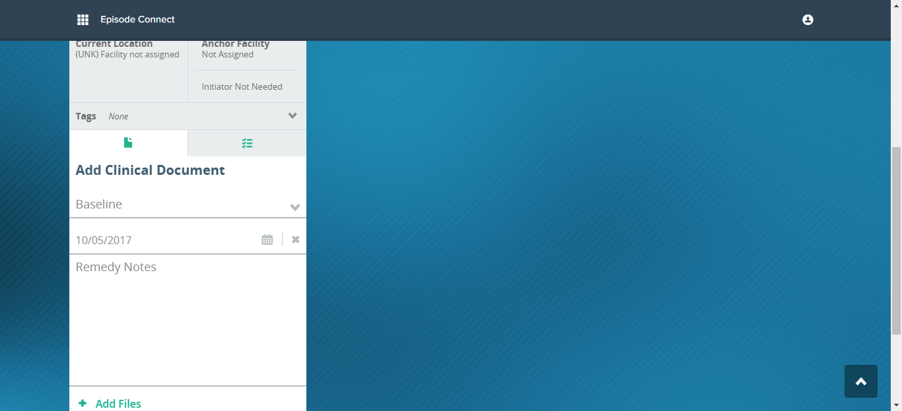

Total Tests
Total Steps
Total Time Taken (Current Run)
0h 50m 3s+890ms
Total Time Taken (Overall)
0h 50m 3s+890ms
Start
2017-10-05 19:10:43
End
2017-10-05 20:00:47
Pass Percentage
Environment
| Param | Value |
|---|---|
| User Name | akshat.jain |
| OS | Windows 10 |
| Java Version | 1.8.0_121 |
| Host Name | IITC-WS-QA27 |
| Extent Cucumber Reporter version | v1.1.0 |
| Browser version | v31.0 |
| Cucumber version | v1.2.3 |
| Selenium version | v2.53.0 |
| Browser Name | Firefox |
Tests
-
Feature: Note - Add files fail2017-10-05 19:10:43 2017-10-05 19:56:18 0h 45m 35s+92ms
Status Timestamp Details -
2017-10-05 19:10:43 2017-10-05 19:14:03 0h 3m 20s+543ms passTo verify that user should be able to upload the file with different extensions or not
Status Timestamp StepName Details 19:10:54 Line Number: 4 - Given I am on the login page PASSED 19:10:54 Snapshot below: 19:10:54 Line Number: 5 - When I enter email field qa.admin@yopmail.com for login PASSED 19:10:54 Snapshot below: 19:10:54 Line Number: 6 - And I enter password field Episode1! for Login PASSED 19:10:54 Snapshot below: 19:10:56 Line Number: 7 - Then I click Access button PASSED 19:10:56 Snapshot below: 19:10:59 Line Number: 8 - Then I should see Tile text Episodes PASSED 19:10:59 Snapshot below: 19:11:01 Line Number: 9 - And I click on the "Episodes" tile PASSED 19:11:01 Snapshot below: 19:11:01 Line Number: 10 - And I switch to new window PASSED 19:11:01 Snapshot below: 19:11:26 Line Number: 11 - Then I should see Episode header text "Dashboard" PASSED 19:11:26 Snapshot below: 19:11:26 Line Number: 12 - When I click on "Patients" in the left navigator present on the episode dashboard page PASSED 19:11:26 Snapshot below: 19:11:30 Line Number: 13 - When I click on "Patient List" in the Patients dropdown menu PASSED 19:11:30 Snapshot below: 19:11:30 Line Number: 14 - When I click on Add Patient button present on the ec1 patients page PASSED 19:11:30 Snapshot below: 19:11:35 Line Number: 15 - Then I verify "Add Patient" text is present on the add patient page PASSED 19:11:35 Snapshot below: 19:11:40 Line Number: 16 - Then I verify "Patient Information" text is present on the add patient page PASSED 19:11:40 Snapshot below: 19:11:40 Line Number: 17 - Then I enter random Patient First Name in the first name text box field present on the Add Patient page PASSED 19:11:40 Snapshot below: 19:11:40 Line Number: 18 - Then I enter random Patient Last Name in the last name text box field present on the Add Patient page PASSED 19:11:40 Snapshot below: 19:11:46 Line Number: 19 - And I enter date of birth "01/05/1995" present on the Add Patient Page PASSED 19:11:46 Snapshot below: 19:11:53 Line Number: 20 - And I selected "Male" from the gender drop down list present on the Add Patient page PASSED 19:11:53 Snapshot below: 19:12:00 Line Number: 21 - And I enter random social security number in the SSN text box field present on the Add Patient page PASSED 19:12:00 Snapshot below: 19:12:05 Line Number: 22 - When I click on Admitting Facility present on the Add Patient page PASSED 19:12:05 Snapshot below: 19:12:16 Line Number: 23 - And I Select "Stamford Hospital" from the list of admitting facility present on the Add Patient page PASSED 19:12:16 Snapshot below: 19:12:21 Line Number: 24 - And I enter "WA784654785" in the Medicare ID present on the Add Patient page PASSED 19:12:21 Snapshot below: 19:12:31 Line Number: 25 - Then I click on the next button present on the Add Patient page PASSED 19:12:31 Snapshot below: 19:12:41 Line Number: 26 - Then I click on the next button present on the Add Patient page PASSED 19:12:41 Snapshot below: 19:12:53 Line Number: 27 - Then I click on the Cancel Button on the New Transition on Add Patient page PASSED 19:12:53 Snapshot below: 19:12:55 Line Number: 28 - Then I switch back to old window PASSED 19:12:55 Snapshot below: 19:12:56 Line Number: 29 - Then I should see Tile text Episodes 2.0 PASSED 19:12:56 Snapshot below: 19:13:00 Line Number: 30 - When I click on the "Episodes 2.0" tile PASSED 19:13:00 Snapshot below: 19:13:00 Line Number: 31 - Then I verify current page "Remedy Partners" title PASSED 19:13:00 Snapshot below: 19:13:01 Line Number: 32 - And I should see "All" tab in the filter bar on patients page PASSED 19:13:01 Snapshot below: 19:13:03 Line Number: 33 - Then I click on "All" tab in the filter bar on patients page PASSED 19:13:03 Snapshot below: 19:13:03 Line Number: 34 - Then I wait to the see the visibility of loader to disappear PASSED 19:13:03 Snapshot below: 19:13:03 Line Number: 35 - Then I verify current page "Remedy Partners" title PASSED 19:13:03 Snapshot below: 19:13:06 Line Number: 36 - When I click on Filter button present on Patient Page PASSED 19:13:06 Snapshot below: 19:13:08 Line Number: 37 - And I click on Filters button present on Filter Page PASSED 19:13:08 Snapshot below: 19:13:08 Line Number: 38 - Then I verify SSN Filter is displayed under List of Filter Options PASSED 19:13:08 Snapshot below: 19:13:08 Line Number: 39 - When I click on SSN Filter present on Filter Page PASSED 19:13:08 Snapshot below: 19:13:10 Line Number: 40 - Then I enter "SSN" value under "ssn" filter to_see_emblem_patient PASSED 19:13:10 Snapshot below: 19:13:10 Line Number: 41 - Then I click on Done button present on the Filter Page PASSED 19:13:10 Snapshot below: 19:13:10 Line Number: 42 - Then I wait to the see the visibility of loader to disappear PASSED 19:13:10 Snapshot below: 19:13:12 Line Number: 43 - Then I scroll the page to bottom by "-100" PASSED 19:13:12 Snapshot below: 19:13:23 Line Number: 44 - Then I wait to see and enable the attestation on the "1" patient on the Patient Card page PASSED 19:13:23 Snapshot below: 19:13:23 Line Number: 45 - Then I wait to the see the visibility of loader to disappear PASSED 19:13:23 Snapshot below: 19:13:25 Line Number: 46 - Then I click on quick action button for note creation on Patient Card page PASSED 19:13:25 Snapshot below: 19:13:27 Line Number: 47 - Then I verify whether topic drop down appears on Add Clinical Document on Patient Card page PASSED 19:13:27 Snapshot below: 19:13:27 Line Number: 48 - And I select the "Baseline" from the topic drop down on Add Clinical Document on Patient Card PASSED 19:13:27 Snapshot below: 19:13:28 Line Number: 49 - And I enter the Note Text "Remedy Notes" in the textarea on Add Clinical Document on Patient Card PASSED 19:13:28 Snapshot below: 19:13:28 Line Number: 50 - Then I click on Add Files link on Note Section on Patient Card PASSED 19:13:28 Snapshot below: 19:13:39 Line Number: 51 - Then I verify that user should be able to select and upload file "Remedy.csv" through Add files link PASSED 19:13:39 Snapshot below: 19:13:44 Line Number: 52 - Then I verify the "Remedy.csv" image is successfully attached at index "1" PASSED 19:13:44 Snapshot below: 19:13:51 Line Number: 53 - Then I click on the create Note Button on Add Clinical Document on Patient Card PASSED 19:13:51 Snapshot below: 19:13:51 Line Number: 54 - Then I verify that create Note has been successfully created PASSED 19:13:51 Snapshot below: 19:13:51 Line Number: 55 - Then I verify Dismiss button should be there on notification message PASSED 19:13:51 Snapshot below: 19:14:02 Line Number: 56 - Then I check clicking on cross icon of green bar green bar notification should get removed PASSED 19:14:02 Snapshot below: -
2017-10-05 19:14:03 2017-10-05 19:17:23 0h 3m 19s+988ms passTo verify that user should be able to upload the file with different extensions or not
Status Timestamp StepName Details 19:14:15 Line Number: 4 - Given I am on the login page PASSED 19:14:15 Snapshot below: 19:14:15 Line Number: 5 - When I enter email field qa.admin@yopmail.com for login PASSED 19:14:15 Snapshot below: 19:14:15 Line Number: 6 - And I enter password field Episode1! for Login PASSED 19:14:15 Snapshot below: 19:14:18 Line Number: 7 - Then I click Access button PASSED 19:14:18 Snapshot below: 19:14:20 Line Number: 8 - Then I should see Tile text Episodes PASSED 19:14:20 Snapshot below: 19:14:23 Line Number: 9 - And I click on the "Episodes" tile PASSED 19:14:23 Snapshot below: 19:14:23 Line Number: 10 - And I switch to new window PASSED 19:14:23 Snapshot below: 19:14:46 Line Number: 11 - Then I should see Episode header text "Dashboard" PASSED 19:14:46 Snapshot below: 19:14:46 Line Number: 12 - When I click on "Patients" in the left navigator present on the episode dashboard page PASSED 19:14:46 Snapshot below: 19:14:50 Line Number: 13 - When I click on "Patient List" in the Patients dropdown menu PASSED 19:14:50 Snapshot below: 19:14:50 Line Number: 14 - When I click on Add Patient button present on the ec1 patients page PASSED 19:14:50 Snapshot below: 19:14:55 Line Number: 15 - Then I verify "Add Patient" text is present on the add patient page PASSED 19:14:55 Snapshot below: 19:15:00 Line Number: 16 - Then I verify "Patient Information" text is present on the add patient page PASSED 19:15:00 Snapshot below: 19:15:00 Line Number: 17 - Then I enter random Patient First Name in the first name text box field present on the Add Patient page PASSED 19:15:00 Snapshot below: 19:15:01 Line Number: 18 - Then I enter random Patient Last Name in the last name text box field present on the Add Patient page PASSED 19:15:01 Snapshot below: 19:15:06 Line Number: 19 - And I enter date of birth "01/05/1995" present on the Add Patient Page PASSED 19:15:06 Snapshot below: 19:15:13 Line Number: 20 - And I selected "Male" from the gender drop down list present on the Add Patient page PASSED 19:15:13 Snapshot below: 19:15:20 Line Number: 21 - And I enter random social security number in the SSN text box field present on the Add Patient page PASSED 19:15:20 Snapshot below: 19:15:26 Line Number: 22 - When I click on Admitting Facility present on the Add Patient page PASSED 19:15:26 Snapshot below: 19:15:36 Line Number: 23 - And I Select "Stamford Hospital" from the list of admitting facility present on the Add Patient page PASSED 19:15:36 Snapshot below: 19:15:41 Line Number: 24 - And I enter "WA784654785" in the Medicare ID present on the Add Patient page PASSED 19:15:41 Snapshot below: 19:15:51 Line Number: 25 - Then I click on the next button present on the Add Patient page PASSED 19:15:51 Snapshot below: 19:16:01 Line Number: 26 - Then I click on the next button present on the Add Patient page PASSED 19:16:01 Snapshot below: 19:16:14 Line Number: 27 - Then I click on the Cancel Button on the New Transition on Add Patient page PASSED 19:16:14 Snapshot below: 19:16:16 Line Number: 28 - Then I switch back to old window PASSED 19:16:16 Snapshot below: 19:16:16 Line Number: 29 - Then I should see Tile text Episodes 2.0 PASSED 19:16:16 Snapshot below: 19:16:21 Line Number: 30 - When I click on the "Episodes 2.0" tile PASSED 19:16:21 Snapshot below: 19:16:21 Line Number: 31 - Then I verify current page "Remedy Partners" title PASSED 19:16:21 Snapshot below: 19:16:22 Line Number: 32 - And I should see "All" tab in the filter bar on patients page PASSED 19:16:22 Snapshot below: 19:16:24 Line Number: 33 - Then I click on "All" tab in the filter bar on patients page PASSED 19:16:24 Snapshot below: 19:16:24 Line Number: 34 - Then I wait to the see the visibility of loader to disappear PASSED 19:16:24 Snapshot below: 19:16:24 Line Number: 35 - Then I verify current page "Remedy Partners" title PASSED 19:16:24 Snapshot below: 19:16:26 Line Number: 36 - When I click on Filter button present on Patient Page PASSED 19:16:26 Snapshot below: 19:16:28 Line Number: 37 - And I click on Filters button present on Filter Page PASSED 19:16:28 Snapshot below: 19:16:28 Line Number: 38 - Then I verify SSN Filter is displayed under List of Filter Options PASSED 19:16:28 Snapshot below: 19:16:29 Line Number: 39 - When I click on SSN Filter present on Filter Page PASSED 19:16:29 Snapshot below: 19:16:31 Line Number: 40 - Then I enter "SSN" value under "ssn" filter to_see_emblem_patient PASSED 19:16:31 Snapshot below: 19:16:31 Line Number: 41 - Then I click on Done button present on the Filter Page PASSED 19:16:31 Snapshot below: 19:16:31 Line Number: 42 - Then I wait to the see the visibility of loader to disappear PASSED 19:16:31 Snapshot below: 19:16:33 Line Number: 43 - Then I scroll the page to bottom by "-100" PASSED 19:16:33 Snapshot below: 19:16:43 Line Number: 44 - Then I wait to see and enable the attestation on the "1" patient on the Patient Card page PASSED 19:16:43 Snapshot below: 19:16:43 Line Number: 45 - Then I wait to the see the visibility of loader to disappear PASSED 19:16:43 Snapshot below: 19:16:45 Line Number: 46 - Then I click on quick action button for note creation on Patient Card page PASSED 19:16:45 Snapshot below: 19:16:48 Line Number: 47 - Then I verify whether topic drop down appears on Add Clinical Document on Patient Card page PASSED 19:16:48 Snapshot below: 19:16:48 Line Number: 48 - And I select the "Baseline" from the topic drop down on Add Clinical Document on Patient Card PASSED 19:16:48 Snapshot below: 19:16:48 Line Number: 49 - And I enter the Note Text "Remedy Notes" in the textarea on Add Clinical Document on Patient Card PASSED 19:16:48 Snapshot below: 19:16:48 Line Number: 50 - Then I click on Add Files link on Note Section on Patient Card PASSED 19:16:48 Snapshot below: 19:16:59 Line Number: 51 - Then I verify that user should be able to select and upload file "Remedy.doc" through Add files link PASSED 19:16:59 Snapshot below: 19:17:04 Line Number: 52 - Then I verify the "Remedy.doc" image is successfully attached at index "1" PASSED 19:17:04 Snapshot below: 19:17:12 Line Number: 53 - Then I click on the create Note Button on Add Clinical Document on Patient Card PASSED 19:17:12 Snapshot below: 19:17:12 Line Number: 54 - Then I verify that create Note has been successfully created PASSED 19:17:12 Snapshot below: 19:17:12 Line Number: 55 - Then I verify Dismiss button should be there on notification message PASSED 19:17:12 Snapshot below: 19:17:22 Line Number: 56 - Then I check clicking on cross icon of green bar green bar notification should get removed PASSED 19:17:22 Snapshot below: -
2017-10-05 19:17:23 2017-10-05 19:20:44 0h 3m 20s+434ms passTo verify that user should be able to upload the file with different extensions or not
Status Timestamp StepName Details 19:17:35 Line Number: 4 - Given I am on the login page PASSED 19:17:35 Snapshot below: 19:17:35 Line Number: 5 - When I enter email field qa.admin@yopmail.com for login PASSED 19:17:35 Snapshot below: 19:17:35 Line Number: 6 - And I enter password field Episode1! for Login PASSED 19:17:35 Snapshot below: 19:17:38 Line Number: 7 - Then I click Access button PASSED 19:17:38 Snapshot below: 19:17:40 Line Number: 8 - Then I should see Tile text Episodes PASSED 19:17:40 Snapshot below: 19:17:42 Line Number: 9 - And I click on the "Episodes" tile PASSED 19:17:42 Snapshot below: 19:17:43 Line Number: 10 - And I switch to new window PASSED 19:17:43 Snapshot below: 19:18:06 Line Number: 11 - Then I should see Episode header text "Dashboard" PASSED 19:18:06 Snapshot below: 19:18:06 Line Number: 12 - When I click on "Patients" in the left navigator present on the episode dashboard page PASSED 19:18:06 Snapshot below: 19:18:10 Line Number: 13 - When I click on "Patient List" in the Patients dropdown menu PASSED 19:18:10 Snapshot below: 19:18:10 Line Number: 14 - When I click on Add Patient button present on the ec1 patients page PASSED 19:18:10 Snapshot below: 19:18:15 Line Number: 15 - Then I verify "Add Patient" text is present on the add patient page PASSED 19:18:15 Snapshot below: 19:18:21 Line Number: 16 - Then I verify "Patient Information" text is present on the add patient page PASSED 19:18:21 Snapshot below: 19:18:21 Line Number: 17 - Then I enter random Patient First Name in the first name text box field present on the Add Patient page PASSED 19:18:21 Snapshot below: 19:18:21 Line Number: 18 - Then I enter random Patient Last Name in the last name text box field present on the Add Patient page PASSED 19:18:21 Snapshot below: 19:18:26 Line Number: 19 - And I enter date of birth "01/05/1995" present on the Add Patient Page PASSED 19:18:26 Snapshot below: 19:18:33 Line Number: 20 - And I selected "Male" from the gender drop down list present on the Add Patient page PASSED 19:18:33 Snapshot below: 19:18:41 Line Number: 21 - And I enter random social security number in the SSN text box field present on the Add Patient page PASSED 19:18:41 Snapshot below: 19:18:46 Line Number: 22 - When I click on Admitting Facility present on the Add Patient page PASSED 19:18:46 Snapshot below: 19:18:56 Line Number: 23 - And I Select "Stamford Hospital" from the list of admitting facility present on the Add Patient page PASSED 19:18:56 Snapshot below: 19:19:02 Line Number: 24 - And I enter "WA784654785" in the Medicare ID present on the Add Patient page PASSED 19:19:02 Snapshot below: 19:19:12 Line Number: 25 - Then I click on the next button present on the Add Patient page PASSED 19:19:12 Snapshot below: 19:19:22 Line Number: 26 - Then I click on the next button present on the Add Patient page PASSED 19:19:22 Snapshot below: 19:19:34 Line Number: 27 - Then I click on the Cancel Button on the New Transition on Add Patient page PASSED 19:19:34 Snapshot below: 19:19:36 Line Number: 28 - Then I switch back to old window PASSED 19:19:36 Snapshot below: 19:19:36 Line Number: 29 - Then I should see Tile text Episodes 2.0 PASSED 19:19:36 Snapshot below: 19:19:41 Line Number: 30 - When I click on the "Episodes 2.0" tile PASSED 19:19:41 Snapshot below: 19:19:41 Line Number: 31 - Then I verify current page "Remedy Partners" title PASSED 19:19:41 Snapshot below: 19:19:42 Line Number: 32 - And I should see "All" tab in the filter bar on patients page PASSED 19:19:42 Snapshot below: 19:19:44 Line Number: 33 - Then I click on "All" tab in the filter bar on patients page PASSED 19:19:44 Snapshot below: 19:19:44 Line Number: 34 - Then I wait to the see the visibility of loader to disappear PASSED 19:19:44 Snapshot below: 19:19:44 Line Number: 35 - Then I verify current page "Remedy Partners" title PASSED 19:19:44 Snapshot below: 19:19:46 Line Number: 36 - When I click on Filter button present on Patient Page PASSED 19:19:46 Snapshot below: 19:19:49 Line Number: 37 - And I click on Filters button present on Filter Page PASSED 19:19:49 Snapshot below: 19:19:49 Line Number: 38 - Then I verify SSN Filter is displayed under List of Filter Options PASSED 19:19:49 Snapshot below: 19:19:49 Line Number: 39 - When I click on SSN Filter present on Filter Page PASSED 19:19:49 Snapshot below: 19:19:51 Line Number: 40 - Then I enter "SSN" value under "ssn" filter to_see_emblem_patient PASSED 19:19:51 Snapshot below: 19:19:51 Line Number: 41 - Then I click on Done button present on the Filter Page PASSED 19:19:51 Snapshot below: 19:19:51 Line Number: 42 - Then I wait to the see the visibility of loader to disappear PASSED 19:19:51 Snapshot below: 19:19:53 Line Number: 43 - Then I scroll the page to bottom by "-100" PASSED 19:19:53 Snapshot below: 19:20:04 Line Number: 44 - Then I wait to see and enable the attestation on the "1" patient on the Patient Card page PASSED 19:20:04 Snapshot below: 19:20:04 Line Number: 45 - Then I wait to the see the visibility of loader to disappear PASSED 19:20:04 Snapshot below: 19:20:06 Line Number: 46 - Then I click on quick action button for note creation on Patient Card page PASSED 19:20:06 Snapshot below: 19:20:08 Line Number: 47 - Then I verify whether topic drop down appears on Add Clinical Document on Patient Card page PASSED 19:20:08 Snapshot below: 19:20:08 Line Number: 48 - And I select the "Baseline" from the topic drop down on Add Clinical Document on Patient Card PASSED 19:20:08 Snapshot below: 19:20:09 Line Number: 49 - And I enter the Note Text "Remedy Notes" in the textarea on Add Clinical Document on Patient Card PASSED 19:20:09 Snapshot below: 19:20:09 Line Number: 50 - Then I click on Add Files link on Note Section on Patient Card PASSED 19:20:09 Snapshot below: 19:20:20 Line Number: 51 - Then I verify that user should be able to select and upload file "Remedy.gif" through Add files link PASSED 19:20:20 Snapshot below: 19:20:25 Line Number: 52 - Then I verify the "Remedy.gif" image is successfully attached at index "1" PASSED 19:20:25 Snapshot below: 19:20:32 Line Number: 53 - Then I click on the create Note Button on Add Clinical Document on Patient Card PASSED 19:20:32 Snapshot below: 19:20:32 Line Number: 54 - Then I verify that create Note has been successfully created PASSED 19:20:32 Snapshot below: 19:20:32 Line Number: 55 - Then I verify Dismiss button should be there on notification message PASSED 19:20:32 Snapshot below: 19:20:42 Line Number: 56 - Then I check clicking on cross icon of green bar green bar notification should get removed PASSED 19:20:42 Snapshot below: -
2017-10-05 19:20:44 2017-10-05 19:24:04 0h 3m 20s+173ms passTo verify that user should be able to upload the file with different extensions or not
Status Timestamp StepName Details 19:20:55 Line Number: 4 - Given I am on the login page PASSED 19:20:55 Snapshot below: 19:20:55 Line Number: 5 - When I enter email field qa.admin@yopmail.com for login PASSED 19:20:55 Snapshot below: 19:20:55 Line Number: 6 - And I enter password field Episode1! for Login PASSED 19:20:55 Snapshot below: 19:20:57 Line Number: 7 - Then I click Access button PASSED 19:20:57 Snapshot below: 19:21:00 Line Number: 8 - Then I should see Tile text Episodes PASSED 19:21:00 Snapshot below: 19:21:02 Line Number: 9 - And I click on the "Episodes" tile PASSED 19:21:02 Snapshot below: 19:21:02 Line Number: 10 - And I switch to new window PASSED 19:21:02 Snapshot below: 19:21:26 Line Number: 11 - Then I should see Episode header text "Dashboard" PASSED 19:21:26 Snapshot below: 19:21:27 Line Number: 12 - When I click on "Patients" in the left navigator present on the episode dashboard page PASSED 19:21:27 Snapshot below: 19:21:30 Line Number: 13 - When I click on "Patient List" in the Patients dropdown menu PASSED 19:21:30 Snapshot below: 19:21:30 Line Number: 14 - When I click on Add Patient button present on the ec1 patients page PASSED 19:21:30 Snapshot below: 19:21:35 Line Number: 15 - Then I verify "Add Patient" text is present on the add patient page PASSED 19:21:35 Snapshot below: 19:21:40 Line Number: 16 - Then I verify "Patient Information" text is present on the add patient page PASSED 19:21:40 Snapshot below: 19:21:41 Line Number: 17 - Then I enter random Patient First Name in the first name text box field present on the Add Patient page PASSED 19:21:41 Snapshot below: 19:21:41 Line Number: 18 - Then I enter random Patient Last Name in the last name text box field present on the Add Patient page PASSED 19:21:41 Snapshot below: 19:21:46 Line Number: 19 - And I enter date of birth "01/05/1995" present on the Add Patient Page PASSED 19:21:46 Snapshot below: 19:21:53 Line Number: 20 - And I selected "Male" from the gender drop down list present on the Add Patient page PASSED 19:21:53 Snapshot below: 19:22:01 Line Number: 21 - And I enter random social security number in the SSN text box field present on the Add Patient page PASSED 19:22:01 Snapshot below: 19:22:06 Line Number: 22 - When I click on Admitting Facility present on the Add Patient page PASSED 19:22:06 Snapshot below: 19:22:16 Line Number: 23 - And I Select "Stamford Hospital" from the list of admitting facility present on the Add Patient page PASSED 19:22:16 Snapshot below: 19:22:21 Line Number: 24 - And I enter "WA784654785" in the Medicare ID present on the Add Patient page PASSED 19:22:21 Snapshot below: 19:22:31 Line Number: 25 - Then I click on the next button present on the Add Patient page PASSED 19:22:31 Snapshot below: 19:22:42 Line Number: 26 - Then I click on the next button present on the Add Patient page PASSED 19:22:42 Snapshot below: 19:22:54 Line Number: 27 - Then I click on the Cancel Button on the New Transition on Add Patient page PASSED 19:22:54 Snapshot below: 19:22:56 Line Number: 28 - Then I switch back to old window PASSED 19:22:56 Snapshot below: 19:22:56 Line Number: 29 - Then I should see Tile text Episodes 2.0 PASSED 19:22:56 Snapshot below: 19:23:01 Line Number: 30 - When I click on the "Episodes 2.0" tile PASSED 19:23:01 Snapshot below: 19:23:01 Line Number: 31 - Then I verify current page "Remedy Partners" title PASSED 19:23:01 Snapshot below: 19:23:02 Line Number: 32 - And I should see "All" tab in the filter bar on patients page PASSED 19:23:02 Snapshot below: 19:23:04 Line Number: 33 - Then I click on "All" tab in the filter bar on patients page PASSED 19:23:04 Snapshot below: 19:23:04 Line Number: 34 - Then I wait to the see the visibility of loader to disappear PASSED 19:23:04 Snapshot below: 19:23:04 Line Number: 35 - Then I verify current page "Remedy Partners" title PASSED 19:23:04 Snapshot below: 19:23:07 Line Number: 36 - When I click on Filter button present on Patient Page PASSED 19:23:07 Snapshot below: 19:23:09 Line Number: 37 - And I click on Filters button present on Filter Page PASSED 19:23:09 Snapshot below: 19:23:09 Line Number: 38 - Then I verify SSN Filter is displayed under List of Filter Options PASSED 19:23:09 Snapshot below: 19:23:09 Line Number: 39 - When I click on SSN Filter present on Filter Page PASSED 19:23:09 Snapshot below: 19:23:11 Line Number: 40 - Then I enter "SSN" value under "ssn" filter to_see_emblem_patient PASSED 19:23:11 Snapshot below: 19:23:11 Line Number: 41 - Then I click on Done button present on the Filter Page PASSED 19:23:11 Snapshot below: 19:23:12 Line Number: 42 - Then I wait to the see the visibility of loader to disappear PASSED 19:23:12 Snapshot below: 19:23:14 Line Number: 43 - Then I scroll the page to bottom by "-100" PASSED 19:23:14 Snapshot below: 19:23:24 Line Number: 44 - Then I wait to see and enable the attestation on the "1" patient on the Patient Card page PASSED 19:23:24 Snapshot below: 19:23:24 Line Number: 45 - Then I wait to the see the visibility of loader to disappear PASSED 19:23:24 Snapshot below: 19:23:26 Line Number: 46 - Then I click on quick action button for note creation on Patient Card page PASSED 19:23:26 Snapshot below: 19:23:28 Line Number: 47 - Then I verify whether topic drop down appears on Add Clinical Document on Patient Card page PASSED 19:23:28 Snapshot below: 19:23:28 Line Number: 48 - And I select the "Baseline" from the topic drop down on Add Clinical Document on Patient Card PASSED 19:23:28 Snapshot below: 19:23:29 Line Number: 49 - And I enter the Note Text "Remedy Notes" in the textarea on Add Clinical Document on Patient Card PASSED 19:23:29 Snapshot below: 19:23:29 Line Number: 50 - Then I click on Add Files link on Note Section on Patient Card PASSED 19:23:29 Snapshot below: 19:23:40 Line Number: 51 - Then I verify that user should be able to select and upload file "Remedy.txt" through Add files link PASSED 19:23:40 Snapshot below: 19:23:45 Line Number: 52 - Then I verify the "Remedy.txt" image is successfully attached at index "1" PASSED 19:23:45 Snapshot below: 19:23:52 Line Number: 53 - Then I click on the create Note Button on Add Clinical Document on Patient Card PASSED 19:23:52 Snapshot below: 19:23:52 Line Number: 54 - Then I verify that create Note has been successfully created PASSED 19:23:52 Snapshot below: 19:23:52 Line Number: 55 - Then I verify Dismiss button should be there on notification message PASSED 19:23:52 Snapshot below: 19:24:02 Line Number: 56 - Then I check clicking on cross icon of green bar green bar notification should get removed PASSED 19:24:02 Snapshot below: -
2017-10-05 19:24:04 2017-10-05 19:27:24 0h 3m 19s+813ms passTo verify that user should be able to upload the file with different extensions or not
Status Timestamp StepName Details 19:24:15 Line Number: 4 - Given I am on the login page PASSED 19:24:15 Snapshot below: 19:24:15 Line Number: 5 - When I enter email field qa.admin@yopmail.com for login PASSED 19:24:15 Snapshot below: 19:24:15 Line Number: 6 - And I enter password field Episode1! for Login PASSED 19:24:15 Snapshot below: 19:24:17 Line Number: 7 - Then I click Access button PASSED 19:24:17 Snapshot below: 19:24:20 Line Number: 8 - Then I should see Tile text Episodes PASSED 19:24:20 Snapshot below: 19:24:22 Line Number: 9 - And I click on the "Episodes" tile PASSED 19:24:22 Snapshot below: 19:24:22 Line Number: 10 - And I switch to new window PASSED 19:24:22 Snapshot below: 19:24:46 Line Number: 11 - Then I should see Episode header text "Dashboard" PASSED 19:24:46 Snapshot below: 19:24:46 Line Number: 12 - When I click on "Patients" in the left navigator present on the episode dashboard page PASSED 19:24:46 Snapshot below: 19:24:50 Line Number: 13 - When I click on "Patient List" in the Patients dropdown menu PASSED 19:24:50 Snapshot below: 19:24:50 Line Number: 14 - When I click on Add Patient button present on the ec1 patients page PASSED 19:24:50 Snapshot below: 19:24:55 Line Number: 15 - Then I verify "Add Patient" text is present on the add patient page PASSED 19:24:55 Snapshot below: 19:25:00 Line Number: 16 - Then I verify "Patient Information" text is present on the add patient page PASSED 19:25:00 Snapshot below: 19:25:01 Line Number: 17 - Then I enter random Patient First Name in the first name text box field present on the Add Patient page PASSED 19:25:01 Snapshot below: 19:25:01 Line Number: 18 - Then I enter random Patient Last Name in the last name text box field present on the Add Patient page PASSED 19:25:01 Snapshot below: 19:25:06 Line Number: 19 - And I enter date of birth "01/05/1995" present on the Add Patient Page PASSED 19:25:06 Snapshot below: 19:25:13 Line Number: 20 - And I selected "Male" from the gender drop down list present on the Add Patient page PASSED 19:25:13 Snapshot below: 19:25:21 Line Number: 21 - And I enter random social security number in the SSN text box field present on the Add Patient page PASSED 19:25:21 Snapshot below: 19:25:26 Line Number: 22 - When I click on Admitting Facility present on the Add Patient page PASSED 19:25:26 Snapshot below: 19:25:36 Line Number: 23 - And I Select "Stamford Hospital" from the list of admitting facility present on the Add Patient page PASSED 19:25:36 Snapshot below: 19:25:41 Line Number: 24 - And I enter "WA784654785" in the Medicare ID present on the Add Patient page PASSED 19:25:41 Snapshot below: 19:25:51 Line Number: 25 - Then I click on the next button present on the Add Patient page PASSED 19:25:51 Snapshot below: 19:26:02 Line Number: 26 - Then I click on the next button present on the Add Patient page PASSED 19:26:02 Snapshot below: 19:26:14 Line Number: 27 - Then I click on the Cancel Button on the New Transition on Add Patient page PASSED 19:26:14 Snapshot below: 19:26:16 Line Number: 28 - Then I switch back to old window PASSED 19:26:16 Snapshot below: 19:26:16 Line Number: 29 - Then I should see Tile text Episodes 2.0 PASSED 19:26:16 Snapshot below: 19:26:21 Line Number: 30 - When I click on the "Episodes 2.0" tile PASSED 19:26:21 Snapshot below: 19:26:21 Line Number: 31 - Then I verify current page "Remedy Partners" title PASSED 19:26:21 Snapshot below: 19:26:22 Line Number: 32 - And I should see "All" tab in the filter bar on patients page PASSED 19:26:22 Snapshot below: 19:26:24 Line Number: 33 - Then I click on "All" tab in the filter bar on patients page PASSED 19:26:24 Snapshot below: 19:26:24 Line Number: 34 - Then I wait to the see the visibility of loader to disappear PASSED 19:26:24 Snapshot below: 19:26:24 Line Number: 35 - Then I verify current page "Remedy Partners" title PASSED 19:26:24 Snapshot below: 19:26:26 Line Number: 36 - When I click on Filter button present on Patient Page PASSED 19:26:26 Snapshot below: 19:26:29 Line Number: 37 - And I click on Filters button present on Filter Page PASSED 19:26:29 Snapshot below: 19:26:29 Line Number: 38 - Then I verify SSN Filter is displayed under List of Filter Options PASSED 19:26:29 Snapshot below: 19:26:29 Line Number: 39 - When I click on SSN Filter present on Filter Page PASSED 19:26:29 Snapshot below: 19:26:31 Line Number: 40 - Then I enter "SSN" value under "ssn" filter to_see_emblem_patient PASSED 19:26:31 Snapshot below: 19:26:31 Line Number: 41 - Then I click on Done button present on the Filter Page PASSED 19:26:31 Snapshot below: 19:26:31 Line Number: 42 - Then I wait to the see the visibility of loader to disappear PASSED 19:26:31 Snapshot below: 19:26:33 Line Number: 43 - Then I scroll the page to bottom by "-100" PASSED 19:26:33 Snapshot below: 19:26:44 Line Number: 44 - Then I wait to see and enable the attestation on the "1" patient on the Patient Card page PASSED 19:26:44 Snapshot below: 19:26:44 Line Number: 45 - Then I wait to the see the visibility of loader to disappear PASSED 19:26:44 Snapshot below: 19:26:46 Line Number: 46 - Then I click on quick action button for note creation on Patient Card page PASSED 19:26:46 Snapshot below: 19:26:48 Line Number: 47 - Then I verify whether topic drop down appears on Add Clinical Document on Patient Card page PASSED 19:26:48 Snapshot below: 19:26:48 Line Number: 48 - And I select the "Baseline" from the topic drop down on Add Clinical Document on Patient Card PASSED 19:26:48 Snapshot below: 19:26:49 Line Number: 49 - And I enter the Note Text "Remedy Notes" in the textarea on Add Clinical Document on Patient Card PASSED 19:26:49 Snapshot below: 19:26:49 Line Number: 50 - Then I click on Add Files link on Note Section on Patient Card PASSED 19:26:49 Snapshot below: 19:27:00 Line Number: 51 - Then I verify that user should be able to select and upload file "Remedy.xls" through Add files link PASSED 19:27:00 Snapshot below: 19:27:05 Line Number: 52 - Then I verify the "Remedy.xls" image is successfully attached at index "1" PASSED 19:27:05 Snapshot below: 19:27:12 Line Number: 53 - Then I click on the create Note Button on Add Clinical Document on Patient Card PASSED 19:27:12 Snapshot below: 19:27:12 Line Number: 54 - Then I verify that create Note has been successfully created PASSED 19:27:12 Snapshot below: 19:27:12 Line Number: 55 - Then I verify Dismiss button should be there on notification message PASSED 19:27:12 Snapshot below: 19:27:22 Line Number: 56 - Then I check clicking on cross icon of green bar green bar notification should get removed PASSED 19:27:22 Snapshot below: -
2017-10-05 19:27:24 2017-10-05 19:30:44 0h 3m 19s+735ms passTo verify that user should be able to upload the file with different extensions or not
Status Timestamp StepName Details 19:27:35 Line Number: 4 - Given I am on the login page PASSED 19:27:35 Snapshot below: 19:27:35 Line Number: 5 - When I enter email field qa.admin@yopmail.com for login PASSED 19:27:35 Snapshot below: 19:27:36 Line Number: 6 - And I enter password field Episode1! for Login PASSED 19:27:36 Snapshot below: 19:27:38 Line Number: 7 - Then I click Access button PASSED 19:27:38 Snapshot below: 19:27:40 Line Number: 8 - Then I should see Tile text Episodes PASSED 19:27:40 Snapshot below: 19:27:43 Line Number: 9 - And I click on the "Episodes" tile PASSED 19:27:43 Snapshot below: 19:27:43 Line Number: 10 - And I switch to new window PASSED 19:27:43 Snapshot below: 19:28:06 Line Number: 11 - Then I should see Episode header text "Dashboard" PASSED 19:28:06 Snapshot below: 19:28:06 Line Number: 12 - When I click on "Patients" in the left navigator present on the episode dashboard page PASSED 19:28:06 Snapshot below: 19:28:10 Line Number: 13 - When I click on "Patient List" in the Patients dropdown menu PASSED 19:28:10 Snapshot below: 19:28:10 Line Number: 14 - When I click on Add Patient button present on the ec1 patients page PASSED 19:28:10 Snapshot below: 19:28:15 Line Number: 15 - Then I verify "Add Patient" text is present on the add patient page PASSED 19:28:15 Snapshot below: 19:28:20 Line Number: 16 - Then I verify "Patient Information" text is present on the add patient page PASSED 19:28:20 Snapshot below: 19:28:20 Line Number: 17 - Then I enter random Patient First Name in the first name text box field present on the Add Patient page PASSED 19:28:20 Snapshot below: 19:28:20 Line Number: 18 - Then I enter random Patient Last Name in the last name text box field present on the Add Patient page PASSED 19:28:20 Snapshot below: 19:28:26 Line Number: 19 - And I enter date of birth "01/05/1995" present on the Add Patient Page PASSED 19:28:26 Snapshot below: 19:28:33 Line Number: 20 - And I selected "Male" from the gender drop down list present on the Add Patient page PASSED 19:28:33 Snapshot below: 19:28:40 Line Number: 21 - And I enter random social security number in the SSN text box field present on the Add Patient page PASSED 19:28:40 Snapshot below: 19:28:45 Line Number: 22 - When I click on Admitting Facility present on the Add Patient page PASSED 19:28:45 Snapshot below: 19:28:56 Line Number: 23 - And I Select "Stamford Hospital" from the list of admitting facility present on the Add Patient page PASSED 19:28:56 Snapshot below: 19:29:01 Line Number: 24 - And I enter "WA784654785" in the Medicare ID present on the Add Patient page PASSED 19:29:01 Snapshot below: 19:29:11 Line Number: 25 - Then I click on the next button present on the Add Patient page PASSED 19:29:11 Snapshot below: 19:29:21 Line Number: 26 - Then I click on the next button present on the Add Patient page PASSED 19:29:21 Snapshot below: 19:29:33 Line Number: 27 - Then I click on the Cancel Button on the New Transition on Add Patient page PASSED 19:29:33 Snapshot below: 19:29:35 Line Number: 28 - Then I switch back to old window PASSED 19:29:35 Snapshot below: 19:29:36 Line Number: 29 - Then I should see Tile text Episodes 2.0 PASSED 19:29:36 Snapshot below: 19:29:40 Line Number: 30 - When I click on the "Episodes 2.0" tile PASSED 19:29:40 Snapshot below: 19:29:40 Line Number: 31 - Then I verify current page "Remedy Partners" title PASSED 19:29:40 Snapshot below: 19:29:42 Line Number: 32 - And I should see "All" tab in the filter bar on patients page PASSED 19:29:42 Snapshot below: 19:29:44 Line Number: 33 - Then I click on "All" tab in the filter bar on patients page PASSED 19:29:44 Snapshot below: 19:29:44 Line Number: 34 - Then I wait to the see the visibility of loader to disappear PASSED 19:29:44 Snapshot below: 19:29:44 Line Number: 35 - Then I verify current page "Remedy Partners" title PASSED 19:29:44 Snapshot below: 19:29:46 Line Number: 36 - When I click on Filter button present on Patient Page PASSED 19:29:46 Snapshot below: 19:29:48 Line Number: 37 - And I click on Filters button present on Filter Page PASSED 19:29:48 Snapshot below: 19:29:48 Line Number: 38 - Then I verify SSN Filter is displayed under List of Filter Options PASSED 19:29:48 Snapshot below: 19:29:49 Line Number: 39 - When I click on SSN Filter present on Filter Page PASSED 19:29:49 Snapshot below: 19:29:51 Line Number: 40 - Then I enter "SSN" value under "ssn" filter to_see_emblem_patient PASSED 19:29:51 Snapshot below: 19:29:51 Line Number: 41 - Then I click on Done button present on the Filter Page PASSED 19:29:51 Snapshot below: 19:29:51 Line Number: 42 - Then I wait to the see the visibility of loader to disappear PASSED 19:29:51 Snapshot below: 19:29:53 Line Number: 43 - Then I scroll the page to bottom by "-100" PASSED 19:29:53 Snapshot below: 19:30:03 Line Number: 44 - Then I wait to see and enable the attestation on the "1" patient on the Patient Card page PASSED 19:30:03 Snapshot below: 19:30:03 Line Number: 45 - Then I wait to the see the visibility of loader to disappear PASSED 19:30:03 Snapshot below: 19:30:06 Line Number: 46 - Then I click on quick action button for note creation on Patient Card page PASSED 19:30:06 Snapshot below: 19:30:08 Line Number: 47 - Then I verify whether topic drop down appears on Add Clinical Document on Patient Card page PASSED 19:30:08 Snapshot below: 19:30:08 Line Number: 48 - And I select the "Baseline" from the topic drop down on Add Clinical Document on Patient Card PASSED 19:30:08 Snapshot below: 19:30:08 Line Number: 49 - And I enter the Note Text "Remedy Notes" in the textarea on Add Clinical Document on Patient Card PASSED 19:30:08 Snapshot below: 19:30:08 Line Number: 50 - Then I click on Add Files link on Note Section on Patient Card PASSED 19:30:08 Snapshot below: 19:30:19 Line Number: 51 - Then I verify that user should be able to select and upload file "Remedy.xlsx" through Add files link PASSED 19:30:19 Snapshot below: 19:30:24 Line Number: 52 - Then I verify the "Remedy.xlsx" image is successfully attached at index "1" PASSED 19:30:24 Snapshot below: 19:30:32 Line Number: 53 - Then I click on the create Note Button on Add Clinical Document on Patient Card PASSED 19:30:32 Snapshot below: 19:30:32 Line Number: 54 - Then I verify that create Note has been successfully created PASSED 19:30:32 Snapshot below: 19:30:32 Line Number: 55 - Then I verify Dismiss button should be there on notification message PASSED 19:30:32 Snapshot below: 19:30:42 Line Number: 56 - Then I check clicking on cross icon of green bar green bar notification should get removed PASSED 19:30:42 Snapshot below: -
2017-10-05 19:30:44 2017-10-05 19:34:05 0h 3m 21s+21ms passTo verify that user should be able to upload the file with different extensions or not
Status Timestamp StepName Details 19:30:55 Line Number: 4 - Given I am on the login page PASSED 19:30:55 Snapshot below: 19:30:56 Line Number: 5 - When I enter email field qa.admin@yopmail.com for login PASSED 19:30:56 Snapshot below: 19:30:56 Line Number: 6 - And I enter password field Episode1! for Login PASSED 19:30:56 Snapshot below: 19:30:58 Line Number: 7 - Then I click Access button PASSED 19:30:58 Snapshot below: 19:31:01 Line Number: 8 - Then I should see Tile text Episodes PASSED 19:31:01 Snapshot below: 19:31:03 Line Number: 9 - And I click on the "Episodes" tile PASSED 19:31:03 Snapshot below: 19:31:03 Line Number: 10 - And I switch to new window PASSED 19:31:03 Snapshot below: 19:31:27 Line Number: 11 - Then I should see Episode header text "Dashboard" PASSED 19:31:27 Snapshot below: 19:31:27 Line Number: 12 - When I click on "Patients" in the left navigator present on the episode dashboard page PASSED 19:31:27 Snapshot below: 19:31:30 Line Number: 13 - When I click on "Patient List" in the Patients dropdown menu PASSED 19:31:30 Snapshot below: 19:31:30 Line Number: 14 - When I click on Add Patient button present on the ec1 patients page PASSED 19:31:30 Snapshot below: 19:31:36 Line Number: 15 - Then I verify "Add Patient" text is present on the add patient page PASSED 19:31:36 Snapshot below: 19:31:41 Line Number: 16 - Then I verify "Patient Information" text is present on the add patient page PASSED 19:31:41 Snapshot below: 19:31:41 Line Number: 17 - Then I enter random Patient First Name in the first name text box field present on the Add Patient page PASSED 19:31:41 Snapshot below: 19:31:41 Line Number: 18 - Then I enter random Patient Last Name in the last name text box field present on the Add Patient page PASSED 19:31:41 Snapshot below: 19:31:46 Line Number: 19 - And I enter date of birth "01/05/1995" present on the Add Patient Page PASSED 19:31:46 Snapshot below: 19:31:54 Line Number: 20 - And I selected "Male" from the gender drop down list present on the Add Patient page PASSED 19:31:54 Snapshot below: 19:32:01 Line Number: 21 - And I enter random social security number in the SSN text box field present on the Add Patient page PASSED 19:32:01 Snapshot below: 19:32:06 Line Number: 22 - When I click on Admitting Facility present on the Add Patient page PASSED 19:32:06 Snapshot below: 19:32:16 Line Number: 23 - And I Select "Stamford Hospital" from the list of admitting facility present on the Add Patient page PASSED 19:32:16 Snapshot below: 19:32:22 Line Number: 24 - And I enter "WA784654785" in the Medicare ID present on the Add Patient page PASSED 19:32:22 Snapshot below: 19:32:32 Line Number: 25 - Then I click on the next button present on the Add Patient page PASSED 19:32:32 Snapshot below: 19:32:42 Line Number: 26 - Then I click on the next button present on the Add Patient page PASSED 19:32:42 Snapshot below: 19:32:54 Line Number: 27 - Then I click on the Cancel Button on the New Transition on Add Patient page PASSED 19:32:54 Snapshot below: 19:32:56 Line Number: 28 - Then I switch back to old window PASSED 19:32:56 Snapshot below: 19:32:56 Line Number: 29 - Then I should see Tile text Episodes 2.0 PASSED 19:32:56 Snapshot below: 19:33:02 Line Number: 30 - When I click on the "Episodes 2.0" tile PASSED 19:33:02 Snapshot below: 19:33:02 Line Number: 31 - Then I verify current page "Remedy Partners" title PASSED 19:33:02 Snapshot below: 19:33:03 Line Number: 32 - And I should see "All" tab in the filter bar on patients page PASSED 19:33:03 Snapshot below: 19:33:05 Line Number: 33 - Then I click on "All" tab in the filter bar on patients page PASSED 19:33:05 Snapshot below: 19:33:05 Line Number: 34 - Then I wait to the see the visibility of loader to disappear PASSED 19:33:05 Snapshot below: 19:33:05 Line Number: 35 - Then I verify current page "Remedy Partners" title PASSED 19:33:05 Snapshot below: 19:33:07 Line Number: 36 - When I click on Filter button present on Patient Page PASSED 19:33:07 Snapshot below: 19:33:09 Line Number: 37 - And I click on Filters button present on Filter Page PASSED 19:33:09 Snapshot below: 19:33:10 Line Number: 38 - Then I verify SSN Filter is displayed under List of Filter Options PASSED 19:33:10 Snapshot below: 19:33:10 Line Number: 39 - When I click on SSN Filter present on Filter Page PASSED 19:33:10 Snapshot below: 19:33:12 Line Number: 40 - Then I enter "SSN" value under "ssn" filter to_see_emblem_patient PASSED 19:33:12 Snapshot below: 19:33:12 Line Number: 41 - Then I click on Done button present on the Filter Page PASSED 19:33:12 Snapshot below: 19:33:12 Line Number: 42 - Then I wait to the see the visibility of loader to disappear PASSED 19:33:12 Snapshot below: 19:33:14 Line Number: 43 - Then I scroll the page to bottom by "-100" PASSED 19:33:14 Snapshot below: 19:33:24 Line Number: 44 - Then I wait to see and enable the attestation on the "1" patient on the Patient Card page PASSED 19:33:24 Snapshot below: 19:33:24 Line Number: 45 - Then I wait to the see the visibility of loader to disappear PASSED 19:33:24 Snapshot below: 19:33:27 Line Number: 46 - Then I click on quick action button for note creation on Patient Card page PASSED 19:33:27 Snapshot below: 19:33:29 Line Number: 47 - Then I verify whether topic drop down appears on Add Clinical Document on Patient Card page PASSED 19:33:29 Snapshot below: 19:33:29 Line Number: 48 - And I select the "Baseline" from the topic drop down on Add Clinical Document on Patient Card PASSED 19:33:29 Snapshot below: 19:33:29 Line Number: 49 - And I enter the Note Text "Remedy Notes" in the textarea on Add Clinical Document on Patient Card PASSED 19:33:29 Snapshot below: 19:33:29 Line Number: 50 - Then I click on Add Files link on Note Section on Patient Card PASSED 19:33:29 Snapshot below: 19:33:40 Line Number: 51 - Then I verify that user should be able to select and upload file "Remedy.bmp" through Add files link PASSED 19:33:40 Snapshot below: 19:33:46 Line Number: 52 - Then I verify the "Remedy.bmp" image is successfully attached at index "1" PASSED 19:33:46 Snapshot below: 19:33:53 Line Number: 53 - Then I click on the create Note Button on Add Clinical Document on Patient Card PASSED 19:33:53 Snapshot below: 19:33:53 Line Number: 54 - Then I verify that create Note has been successfully created PASSED 19:33:53 Snapshot below: 19:33:53 Line Number: 55 - Then I verify Dismiss button should be there on notification message PASSED 19:33:53 Snapshot below: 19:34:03 Line Number: 56 - Then I check clicking on cross icon of green bar green bar notification should get removed PASSED 19:34:03 Snapshot below: -
2017-10-05 19:34:05 2017-10-05 19:37:25 0h 3m 19s+930ms passTo verify that user should be able to upload the file with different extensions or not
Status Timestamp StepName Details 19:34:16 Line Number: 4 - Given I am on the login page PASSED 19:34:16 Snapshot below: 19:34:16 Line Number: 5 - When I enter email field qa.admin@yopmail.com for login PASSED 19:34:16 Snapshot below: 19:34:16 Line Number: 6 - And I enter password field Episode1! for Login PASSED 19:34:16 Snapshot below: 19:34:18 Line Number: 7 - Then I click Access button PASSED 19:34:18 Snapshot below: 19:34:21 Line Number: 8 - Then I should see Tile text Episodes PASSED 19:34:21 Snapshot below: 19:34:23 Line Number: 9 - And I click on the "Episodes" tile PASSED 19:34:23 Snapshot below: 19:34:23 Line Number: 10 - And I switch to new window PASSED 19:34:23 Snapshot below: 19:34:47 Line Number: 11 - Then I should see Episode header text "Dashboard" PASSED 19:34:47 Snapshot below: 19:34:47 Line Number: 12 - When I click on "Patients" in the left navigator present on the episode dashboard page PASSED 19:34:47 Snapshot below: 19:34:50 Line Number: 13 - When I click on "Patient List" in the Patients dropdown menu PASSED 19:34:50 Snapshot below: 19:34:50 Line Number: 14 - When I click on Add Patient button present on the ec1 patients page PASSED 19:34:50 Snapshot below: 19:34:56 Line Number: 15 - Then I verify "Add Patient" text is present on the add patient page PASSED 19:34:56 Snapshot below: 19:35:01 Line Number: 16 - Then I verify "Patient Information" text is present on the add patient page PASSED 19:35:01 Snapshot below: 19:35:01 Line Number: 17 - Then I enter random Patient First Name in the first name text box field present on the Add Patient page PASSED 19:35:01 Snapshot below: 19:35:01 Line Number: 18 - Then I enter random Patient Last Name in the last name text box field present on the Add Patient page PASSED 19:35:01 Snapshot below: 19:35:06 Line Number: 19 - And I enter date of birth "01/05/1995" present on the Add Patient Page PASSED 19:35:06 Snapshot below: 19:35:14 Line Number: 20 - And I selected "Male" from the gender drop down list present on the Add Patient page PASSED 19:35:14 Snapshot below: 19:35:21 Line Number: 21 - And I enter random social security number in the SSN text box field present on the Add Patient page PASSED 19:35:21 Snapshot below: 19:35:26 Line Number: 22 - When I click on Admitting Facility present on the Add Patient page PASSED 19:35:26 Snapshot below: 19:35:36 Line Number: 23 - And I Select "Stamford Hospital" from the list of admitting facility present on the Add Patient page PASSED 19:35:36 Snapshot below: 19:35:42 Line Number: 24 - And I enter "WA784654785" in the Medicare ID present on the Add Patient page PASSED 19:35:42 Snapshot below: 19:35:52 Line Number: 25 - Then I click on the next button present on the Add Patient page PASSED 19:35:52 Snapshot below: 19:36:02 Line Number: 26 - Then I click on the next button present on the Add Patient page PASSED 19:36:02 Snapshot below: 19:36:14 Line Number: 27 - Then I click on the Cancel Button on the New Transition on Add Patient page PASSED 19:36:14 Snapshot below: 19:36:16 Line Number: 28 - Then I switch back to old window PASSED 19:36:16 Snapshot below: 19:36:16 Line Number: 29 - Then I should see Tile text Episodes 2.0 PASSED 19:36:16 Snapshot below: 19:36:22 Line Number: 30 - When I click on the "Episodes 2.0" tile PASSED 19:36:22 Snapshot below: 19:36:22 Line Number: 31 - Then I verify current page "Remedy Partners" title PASSED 19:36:22 Snapshot below: 19:36:23 Line Number: 32 - And I should see "All" tab in the filter bar on patients page PASSED 19:36:23 Snapshot below: 19:36:25 Line Number: 33 - Then I click on "All" tab in the filter bar on patients page PASSED 19:36:25 Snapshot below: 19:36:25 Line Number: 34 - Then I wait to the see the visibility of loader to disappear PASSED 19:36:25 Snapshot below: 19:36:25 Line Number: 35 - Then I verify current page "Remedy Partners" title PASSED 19:36:25 Snapshot below: 19:36:28 Line Number: 36 - When I click on Filter button present on Patient Page PASSED 19:36:28 Snapshot below: 19:36:30 Line Number: 37 - And I click on Filters button present on Filter Page PASSED 19:36:30 Snapshot below: 19:36:30 Line Number: 38 - Then I verify SSN Filter is displayed under List of Filter Options PASSED 19:36:30 Snapshot below: 19:36:30 Line Number: 39 - When I click on SSN Filter present on Filter Page PASSED 19:36:30 Snapshot below: 19:36:32 Line Number: 40 - Then I enter "SSN" value under "ssn" filter to_see_emblem_patient PASSED 19:36:32 Snapshot below: 19:36:32 Line Number: 41 - Then I click on Done button present on the Filter Page PASSED 19:36:32 Snapshot below: 19:36:32 Line Number: 42 - Then I wait to the see the visibility of loader to disappear PASSED 19:36:32 Snapshot below: 19:36:34 Line Number: 43 - Then I scroll the page to bottom by "-100" PASSED 19:36:34 Snapshot below: 19:36:45 Line Number: 44 - Then I wait to see and enable the attestation on the "1" patient on the Patient Card page PASSED 19:36:45 Snapshot below: 19:36:45 Line Number: 45 - Then I wait to the see the visibility of loader to disappear PASSED 19:36:45 Snapshot below: 19:36:47 Line Number: 46 - Then I click on quick action button for note creation on Patient Card page PASSED 19:36:47 Snapshot below: 19:36:49 Line Number: 47 - Then I verify whether topic drop down appears on Add Clinical Document on Patient Card page PASSED 19:36:49 Snapshot below: 19:36:49 Line Number: 48 - And I select the "Baseline" from the topic drop down on Add Clinical Document on Patient Card PASSED 19:36:49 Snapshot below: 19:36:49 Line Number: 49 - And I enter the Note Text "Remedy Notes" in the textarea on Add Clinical Document on Patient Card PASSED 19:36:49 Snapshot below: 19:36:50 Line Number: 50 - Then I click on Add Files link on Note Section on Patient Card PASSED 19:36:50 Snapshot below: 19:37:01 Line Number: 51 - Then I verify that user should be able to select and upload file "Remedy.docx" through Add files link PASSED 19:37:01 Snapshot below: 19:37:06 Line Number: 52 - Then I verify the "Remedy.docx" image is successfully attached at index "1" PASSED 19:37:06 Snapshot below: 19:37:13 Line Number: 53 - Then I click on the create Note Button on Add Clinical Document on Patient Card PASSED 19:37:13 Snapshot below: 19:37:13 Line Number: 54 - Then I verify that create Note has been successfully created PASSED 19:37:13 Snapshot below: 19:37:13 Line Number: 55 - Then I verify Dismiss button should be there on notification message PASSED 19:37:13 Snapshot below: 19:37:23 Line Number: 56 - Then I check clicking on cross icon of green bar green bar notification should get removed PASSED 19:37:23 Snapshot below: -
2017-10-05 19:37:25 2017-10-05 19:40:43 0h 3m 18s+370ms passTo verify that user should be able to upload the file with different extensions or not
Status Timestamp StepName Details 19:37:35 Line Number: 4 - Given I am on the login page PASSED 19:37:35 Snapshot below: 19:37:36 Line Number: 5 - When I enter email field qa.admin@yopmail.com for login PASSED 19:37:36 Snapshot below: 19:37:36 Line Number: 6 - And I enter password field Episode1! for Login PASSED 19:37:36 Snapshot below: 19:37:38 Line Number: 7 - Then I click Access button PASSED 19:37:38 Snapshot below: 19:37:40 Line Number: 8 - Then I should see Tile text Episodes PASSED 19:37:40 Snapshot below: 19:37:43 Line Number: 9 - And I click on the "Episodes" tile PASSED 19:37:43 Snapshot below: 19:37:43 Line Number: 10 - And I switch to new window PASSED 19:37:43 Snapshot below: 19:38:06 Line Number: 11 - Then I should see Episode header text "Dashboard" PASSED 19:38:06 Snapshot below: 19:38:06 Line Number: 12 - When I click on "Patients" in the left navigator present on the episode dashboard page PASSED 19:38:06 Snapshot below: 19:38:10 Line Number: 13 - When I click on "Patient List" in the Patients dropdown menu PASSED 19:38:10 Snapshot below: 19:38:10 Line Number: 14 - When I click on Add Patient button present on the ec1 patients page PASSED 19:38:10 Snapshot below: 19:38:15 Line Number: 15 - Then I verify "Add Patient" text is present on the add patient page PASSED 19:38:15 Snapshot below: 19:38:20 Line Number: 16 - Then I verify "Patient Information" text is present on the add patient page PASSED 19:38:20 Snapshot below: 19:38:20 Line Number: 17 - Then I enter random Patient First Name in the first name text box field present on the Add Patient page PASSED 19:38:20 Snapshot below: 19:38:20 Line Number: 18 - Then I enter random Patient Last Name in the last name text box field present on the Add Patient page PASSED 19:38:20 Snapshot below: 19:38:26 Line Number: 19 - And I enter date of birth "01/05/1995" present on the Add Patient Page PASSED 19:38:26 Snapshot below: 19:38:33 Line Number: 20 - And I selected "Male" from the gender drop down list present on the Add Patient page PASSED 19:38:33 Snapshot below: 19:38:40 Line Number: 21 - And I enter random social security number in the SSN text box field present on the Add Patient page PASSED 19:38:40 Snapshot below: 19:38:45 Line Number: 22 - When I click on Admitting Facility present on the Add Patient page PASSED 19:38:45 Snapshot below: 19:38:56 Line Number: 23 - And I Select "Stamford Hospital" from the list of admitting facility present on the Add Patient page PASSED 19:38:56 Snapshot below: 19:39:01 Line Number: 24 - And I enter "WA784654785" in the Medicare ID present on the Add Patient page PASSED 19:39:01 Snapshot below: 19:39:11 Line Number: 25 - Then I click on the next button present on the Add Patient page PASSED 19:39:11 Snapshot below: 19:39:21 Line Number: 26 - Then I click on the next button present on the Add Patient page PASSED 19:39:21 Snapshot below: 19:39:33 Line Number: 27 - Then I click on the Cancel Button on the New Transition on Add Patient page PASSED 19:39:33 Snapshot below: 19:39:35 Line Number: 28 - Then I switch back to old window PASSED 19:39:35 Snapshot below: 19:39:36 Line Number: 29 - Then I should see Tile text Episodes 2.0 PASSED 19:39:36 Snapshot below: 19:39:40 Line Number: 30 - When I click on the "Episodes 2.0" tile PASSED 19:39:40 Snapshot below: 19:39:40 Line Number: 31 - Then I verify current page "Remedy Partners" title PASSED 19:39:40 Snapshot below: 19:39:41 Line Number: 32 - And I should see "All" tab in the filter bar on patients page PASSED 19:39:41 Snapshot below: 19:39:43 Line Number: 33 - Then I click on "All" tab in the filter bar on patients page PASSED 19:39:43 Snapshot below: 19:39:43 Line Number: 34 - Then I wait to the see the visibility of loader to disappear PASSED 19:39:43 Snapshot below: 19:39:43 Line Number: 35 - Then I verify current page "Remedy Partners" title PASSED 19:39:43 Snapshot below: 19:39:46 Line Number: 36 - When I click on Filter button present on Patient Page PASSED 19:39:46 Snapshot below: 19:39:48 Line Number: 37 - And I click on Filters button present on Filter Page PASSED 19:39:48 Snapshot below: 19:39:48 Line Number: 38 - Then I verify SSN Filter is displayed under List of Filter Options PASSED 19:39:48 Snapshot below: 19:39:48 Line Number: 39 - When I click on SSN Filter present on Filter Page PASSED 19:39:48 Snapshot below: 19:39:50 Line Number: 40 - Then I enter "SSN" value under "ssn" filter to_see_emblem_patient PASSED 19:39:50 Snapshot below: 19:39:51 Line Number: 41 - Then I click on Done button present on the Filter Page PASSED 19:39:51 Snapshot below: 19:39:51 Line Number: 42 - Then I wait to the see the visibility of loader to disappear PASSED 19:39:51 Snapshot below: 19:39:53 Line Number: 43 - Then I scroll the page to bottom by "-100" PASSED 19:39:53 Snapshot below: 19:40:03 Line Number: 44 - Then I wait to see and enable the attestation on the "1" patient on the Patient Card page PASSED 19:40:03 Snapshot below: 19:40:03 Line Number: 45 - Then I wait to the see the visibility of loader to disappear PASSED 19:40:03 Snapshot below: 19:40:05 Line Number: 46 - Then I click on quick action button for note creation on Patient Card page PASSED 19:40:05 Snapshot below: 19:40:07 Line Number: 47 - Then I verify whether topic drop down appears on Add Clinical Document on Patient Card page PASSED 19:40:07 Snapshot below: 19:40:07 Line Number: 48 - And I select the "Baseline" from the topic drop down on Add Clinical Document on Patient Card PASSED 19:40:07 Snapshot below: 19:40:08 Line Number: 49 - And I enter the Note Text "Remedy Notes" in the textarea on Add Clinical Document on Patient Card PASSED 19:40:08 Snapshot below: 19:40:08 Line Number: 50 - Then I click on Add Files link on Note Section on Patient Card PASSED 19:40:08 Snapshot below: 19:40:19 Line Number: 51 - Then I verify that user should be able to select and upload file "Remedy.jpg" through Add files link PASSED 19:40:19 Snapshot below: 19:40:24 Line Number: 52 - Then I verify the "Remedy.jpg" image is successfully attached at index "1" PASSED 19:40:24 Snapshot below: 19:40:31 Line Number: 53 - Then I click on the create Note Button on Add Clinical Document on Patient Card PASSED 19:40:31 Snapshot below: 19:40:31 Line Number: 54 - Then I verify that create Note has been successfully created PASSED 19:40:31 Snapshot below: 19:40:31 Line Number: 55 - Then I verify Dismiss button should be there on notification message PASSED 19:40:31 Snapshot below: 19:40:41 Line Number: 56 - Then I check clicking on cross icon of green bar green bar notification should get removed PASSED 19:40:41 Snapshot below: -
2017-10-05 19:40:43 2017-10-05 19:44:01 0h 3m 18s+47ms passTo verify that user should be able to upload the file with different extensions or not
Status Timestamp StepName Details 19:40:53 Line Number: 4 - Given I am on the login page PASSED 19:40:53 Snapshot below: 19:40:54 Line Number: 5 - When I enter email field qa.admin@yopmail.com for login PASSED 19:40:54 Snapshot below: 19:40:54 Line Number: 6 - And I enter password field Episode1! for Login PASSED 19:40:54 Snapshot below: 19:40:56 Line Number: 7 - Then I click Access button PASSED 19:40:56 Snapshot below: 19:40:59 Line Number: 8 - Then I should see Tile text Episodes PASSED 19:40:59 Snapshot below: 19:41:01 Line Number: 9 - And I click on the "Episodes" tile PASSED 19:41:01 Snapshot below: 19:41:01 Line Number: 10 - And I switch to new window PASSED 19:41:01 Snapshot below: 19:41:24 Line Number: 11 - Then I should see Episode header text "Dashboard" PASSED 19:41:24 Snapshot below: 19:41:24 Line Number: 12 - When I click on "Patients" in the left navigator present on the episode dashboard page PASSED 19:41:24 Snapshot below: 19:41:27 Line Number: 13 - When I click on "Patient List" in the Patients dropdown menu PASSED 19:41:27 Snapshot below: 19:41:27 Line Number: 14 - When I click on Add Patient button present on the ec1 patients page PASSED 19:41:27 Snapshot below: 19:41:32 Line Number: 15 - Then I verify "Add Patient" text is present on the add patient page PASSED 19:41:32 Snapshot below: 19:41:37 Line Number: 16 - Then I verify "Patient Information" text is present on the add patient page PASSED 19:41:37 Snapshot below: 19:41:38 Line Number: 17 - Then I enter random Patient First Name in the first name text box field present on the Add Patient page PASSED 19:41:38 Snapshot below: 19:41:38 Line Number: 18 - Then I enter random Patient Last Name in the last name text box field present on the Add Patient page PASSED 19:41:38 Snapshot below: 19:41:43 Line Number: 19 - And I enter date of birth "01/05/1995" present on the Add Patient Page PASSED 19:41:43 Snapshot below: 19:41:50 Line Number: 20 - And I selected "Male" from the gender drop down list present on the Add Patient page PASSED 19:41:50 Snapshot below: 19:41:58 Line Number: 21 - And I enter random social security number in the SSN text box field present on the Add Patient page PASSED 19:41:58 Snapshot below: 19:42:03 Line Number: 22 - When I click on Admitting Facility present on the Add Patient page PASSED 19:42:03 Snapshot below: 19:42:13 Line Number: 23 - And I Select "Stamford Hospital" from the list of admitting facility present on the Add Patient page PASSED 19:42:13 Snapshot below: 19:42:18 Line Number: 24 - And I enter "WA784654785" in the Medicare ID present on the Add Patient page PASSED 19:42:18 Snapshot below: 19:42:29 Line Number: 25 - Then I click on the next button present on the Add Patient page PASSED 19:42:29 Snapshot below: 19:42:39 Line Number: 26 - Then I click on the next button present on the Add Patient page PASSED 19:42:39 Snapshot below: 19:42:51 Line Number: 27 - Then I click on the Cancel Button on the New Transition on Add Patient page PASSED 19:42:51 Snapshot below: 19:42:53 Line Number: 28 - Then I switch back to old window PASSED 19:42:53 Snapshot below: 19:42:53 Line Number: 29 - Then I should see Tile text Episodes 2.0 PASSED 19:42:53 Snapshot below: 19:42:59 Line Number: 30 - When I click on the "Episodes 2.0" tile PASSED 19:42:59 Snapshot below: 19:42:59 Line Number: 31 - Then I verify current page "Remedy Partners" title PASSED 19:42:59 Snapshot below: 19:42:59 Line Number: 32 - And I should see "All" tab in the filter bar on patients page PASSED 19:42:59 Snapshot below: 19:43:01 Line Number: 33 - Then I click on "All" tab in the filter bar on patients page PASSED 19:43:01 Snapshot below: 19:43:01 Line Number: 34 - Then I wait to the see the visibility of loader to disappear PASSED 19:43:01 Snapshot below: 19:43:01 Line Number: 35 - Then I verify current page "Remedy Partners" title PASSED 19:43:01 Snapshot below: 19:43:04 Line Number: 36 - When I click on Filter button present on Patient Page PASSED 19:43:04 Snapshot below: 19:43:06 Line Number: 37 - And I click on Filters button present on Filter Page PASSED 19:43:06 Snapshot below: 19:43:06 Line Number: 38 - Then I verify SSN Filter is displayed under List of Filter Options PASSED 19:43:06 Snapshot below: 19:43:06 Line Number: 39 - When I click on SSN Filter present on Filter Page PASSED 19:43:06 Snapshot below: 19:43:09 Line Number: 40 - Then I enter "SSN" value under "ssn" filter to_see_emblem_patient PASSED 19:43:09 Snapshot below: 19:43:09 Line Number: 41 - Then I click on Done button present on the Filter Page PASSED 19:43:09 Snapshot below: 19:43:09 Line Number: 42 - Then I wait to the see the visibility of loader to disappear PASSED 19:43:09 Snapshot below: 19:43:11 Line Number: 43 - Then I scroll the page to bottom by "-100" PASSED 19:43:11 Snapshot below: 19:43:21 Line Number: 44 - Then I wait to see and enable the attestation on the "1" patient on the Patient Card page PASSED 19:43:21 Snapshot below: 19:43:21 Line Number: 45 - Then I wait to the see the visibility of loader to disappear PASSED 19:43:21 Snapshot below: 19:43:23 Line Number: 46 - Then I click on quick action button for note creation on Patient Card page PASSED 19:43:23 Snapshot below: 19:43:25 Line Number: 47 - Then I verify whether topic drop down appears on Add Clinical Document on Patient Card page PASSED 19:43:25 Snapshot below: 19:43:25 Line Number: 48 - And I select the "Baseline" from the topic drop down on Add Clinical Document on Patient Card PASSED 19:43:25 Snapshot below: 19:43:26 Line Number: 49 - And I enter the Note Text "Remedy Notes" in the textarea on Add Clinical Document on Patient Card PASSED 19:43:26 Snapshot below: 19:43:26 Line Number: 50 - Then I click on Add Files link on Note Section on Patient Card PASSED 19:43:26 Snapshot below: 19:43:37 Line Number: 51 - Then I verify that user should be able to select and upload file "Remedy.pdf" through Add files link PASSED 19:43:37 Snapshot below: 19:43:42 Line Number: 52 - Then I verify the "Remedy.pdf" image is successfully attached at index "1" PASSED 19:43:42 Snapshot below: 19:43:49 Line Number: 53 - Then I click on the create Note Button on Add Clinical Document on Patient Card PASSED 19:43:49 Snapshot below: 19:43:49 Line Number: 54 - Then I verify that create Note has been successfully created PASSED 19:43:49 Snapshot below: 19:43:49 Line Number: 55 - Then I verify Dismiss button should be there on notification message PASSED 19:43:49 Snapshot below: 19:43:59 Line Number: 56 - Then I check clicking on cross icon of green bar green bar notification should get removed PASSED 19:43:59 Snapshot below: -
2017-10-05 19:44:01 2017-10-05 19:47:21 0h 3m 20s+231ms passTo verify that user should be able to upload the file with different extensions or not
Status Timestamp StepName Details 19:44:12 Line Number: 4 - Given I am on the login page PASSED 19:44:12 Snapshot below: 19:44:12 Line Number: 5 - When I enter email field qa.admin@yopmail.com for login PASSED 19:44:12 Snapshot below: 19:44:12 Line Number: 6 - And I enter password field Episode1! for Login PASSED 19:44:12 Snapshot below: 19:44:14 Line Number: 7 - Then I click Access button PASSED 19:44:14 Snapshot below: 19:44:17 Line Number: 8 - Then I should see Tile text Episodes PASSED 19:44:17 Snapshot below: 19:44:19 Line Number: 9 - And I click on the "Episodes" tile PASSED 19:44:19 Snapshot below: 19:44:19 Line Number: 10 - And I switch to new window PASSED 19:44:19 Snapshot below: 19:44:44 Line Number: 11 - Then I should see Episode header text "Dashboard" PASSED 19:44:44 Snapshot below: 19:44:44 Line Number: 12 - When I click on "Patients" in the left navigator present on the episode dashboard page PASSED 19:44:44 Snapshot below: 19:44:48 Line Number: 13 - When I click on "Patient List" in the Patients dropdown menu PASSED 19:44:48 Snapshot below: 19:44:48 Line Number: 14 - When I click on Add Patient button present on the ec1 patients page PASSED 19:44:48 Snapshot below: 19:44:53 Line Number: 15 - Then I verify "Add Patient" text is present on the add patient page PASSED 19:44:53 Snapshot below: 19:44:58 Line Number: 16 - Then I verify "Patient Information" text is present on the add patient page PASSED 19:44:58 Snapshot below: 19:44:58 Line Number: 17 - Then I enter random Patient First Name in the first name text box field present on the Add Patient page PASSED 19:44:58 Snapshot below: 19:44:58 Line Number: 18 - Then I enter random Patient Last Name in the last name text box field present on the Add Patient page PASSED 19:44:58 Snapshot below: 19:45:04 Line Number: 19 - And I enter date of birth "01/05/1995" present on the Add Patient Page PASSED 19:45:04 Snapshot below: 19:45:11 Line Number: 20 - And I selected "Male" from the gender drop down list present on the Add Patient page PASSED 19:45:11 Snapshot below: 19:45:18 Line Number: 21 - And I enter random social security number in the SSN text box field present on the Add Patient page PASSED 19:45:18 Snapshot below: 19:45:23 Line Number: 22 - When I click on Admitting Facility present on the Add Patient page PASSED 19:45:23 Snapshot below: 19:45:34 Line Number: 23 - And I Select "Stamford Hospital" from the list of admitting facility present on the Add Patient page PASSED 19:45:34 Snapshot below: 19:45:39 Line Number: 24 - And I enter "WA784654785" in the Medicare ID present on the Add Patient page PASSED 19:45:39 Snapshot below: 19:45:49 Line Number: 25 - Then I click on the next button present on the Add Patient page PASSED 19:45:49 Snapshot below: 19:45:59 Line Number: 26 - Then I click on the next button present on the Add Patient page PASSED 19:45:59 Snapshot below: 19:46:11 Line Number: 27 - Then I click on the Cancel Button on the New Transition on Add Patient page PASSED 19:46:11 Snapshot below: 19:46:13 Line Number: 28 - Then I switch back to old window PASSED 19:46:13 Snapshot below: 19:46:14 Line Number: 29 - Then I should see Tile text Episodes 2.0 PASSED 19:46:14 Snapshot below: 19:46:19 Line Number: 30 - When I click on the "Episodes 2.0" tile PASSED 19:46:19 Snapshot below: 19:46:19 Line Number: 31 - Then I verify current page "Remedy Partners" title PASSED 19:46:19 Snapshot below: 19:46:19 Line Number: 32 - And I should see "All" tab in the filter bar on patients page PASSED 19:46:19 Snapshot below: 19:46:21 Line Number: 33 - Then I click on "All" tab in the filter bar on patients page PASSED 19:46:21 Snapshot below: 19:46:22 Line Number: 34 - Then I wait to the see the visibility of loader to disappear PASSED 19:46:22 Snapshot below: 19:46:22 Line Number: 35 - Then I verify current page "Remedy Partners" title PASSED 19:46:22 Snapshot below: 19:46:24 Line Number: 36 - When I click on Filter button present on Patient Page PASSED 19:46:24 Snapshot below: 19:46:26 Line Number: 37 - And I click on Filters button present on Filter Page PASSED 19:46:26 Snapshot below: 19:46:26 Line Number: 38 - Then I verify SSN Filter is displayed under List of Filter Options PASSED 19:46:26 Snapshot below: 19:46:26 Line Number: 39 - When I click on SSN Filter present on Filter Page PASSED 19:46:26 Snapshot below: 19:46:29 Line Number: 40 - Then I enter "SSN" value under "ssn" filter to_see_emblem_patient PASSED 19:46:29 Snapshot below: 19:46:29 Line Number: 41 - Then I click on Done button present on the Filter Page PASSED 19:46:29 Snapshot below: 19:46:29 Line Number: 42 - Then I wait to the see the visibility of loader to disappear PASSED 19:46:29 Snapshot below: 19:46:31 Line Number: 43 - Then I scroll the page to bottom by "-100" PASSED 19:46:31 Snapshot below: 19:46:41 Line Number: 44 - Then I wait to see and enable the attestation on the "1" patient on the Patient Card page PASSED 19:46:41 Snapshot below: 19:46:41 Line Number: 45 - Then I wait to the see the visibility of loader to disappear PASSED 19:46:41 Snapshot below: 19:46:43 Line Number: 46 - Then I click on quick action button for note creation on Patient Card page PASSED 19:46:43 Snapshot below: 19:46:45 Line Number: 47 - Then I verify whether topic drop down appears on Add Clinical Document on Patient Card page PASSED 19:46:45 Snapshot below: 19:46:46 Line Number: 48 - And I select the "Baseline" from the topic drop down on Add Clinical Document on Patient Card PASSED 19:46:46 Snapshot below: 19:46:46 Line Number: 49 - And I enter the Note Text "Remedy Notes" in the textarea on Add Clinical Document on Patient Card PASSED 19:46:46 Snapshot below: 19:46:46 Line Number: 50 - Then I click on Add Files link on Note Section on Patient Card PASSED 19:46:46 Snapshot below: 19:46:57 Line Number: 51 - Then I verify that user should be able to select and upload file "Remedy.png" through Add files link PASSED 19:46:57 Snapshot below: 19:47:02 Line Number: 52 - Then I verify the "Remedy.png" image is successfully attached at index "1" PASSED 19:47:02 Snapshot below: 19:47:09 Line Number: 53 - Then I click on the create Note Button on Add Clinical Document on Patient Card PASSED 19:47:09 Snapshot below: 19:47:09 Line Number: 54 - Then I verify that create Note has been successfully created PASSED 19:47:09 Snapshot below: 19:47:09 Line Number: 55 - Then I verify Dismiss button should be there on notification message PASSED 19:47:09 Snapshot below: 19:47:20 Line Number: 56 - Then I check clicking on cross icon of green bar green bar notification should get removed PASSED 19:47:20 Snapshot below: -
2017-10-05 19:47:21 2017-10-05 19:50:22 0h 3m 0s+782ms failTo verify that User should be able upload multiple files at once on Notes on Patient Card
Status Timestamp StepName Details 19:47:32 Line Number: 73 - Given I am on the login page PASSED 19:47:32 Snapshot below: 19:47:33 Line Number: 74 - When I enter email field qa.admin@yopmail.com for login PASSED 19:47:33 Snapshot below: 19:47:33 Line Number: 75 - And I enter password field Episode1! for Login PASSED 19:47:33 Snapshot below: 19:47:35 Line Number: 76 - Then I click Access button PASSED 19:47:35 Snapshot below: 19:47:37 Line Number: 77 - Then I should see Tile text Episodes PASSED 19:47:37 Snapshot below: 19:47:40 Line Number: 78 - And I click on the "Episodes" tile PASSED 19:47:40 Snapshot below: 19:47:40 Line Number: 79 - And I switch to new window PASSED 19:47:40 Snapshot below: 19:48:03 Line Number: 80 - Then I should see Episode header text "Dashboard" PASSED 19:48:03 Snapshot below: 19:48:03 Line Number: 81 - When I click on "Patients" in the left navigator present on the episode dashboard page PASSED 19:48:03 Snapshot below: 19:48:07 Line Number: 82 - When I click on "Patient List" in the Patients dropdown menu PASSED 19:48:07 Snapshot below: 19:48:07 Line Number: 83 - When I click on Add Patient button present on the ec1 patients page PASSED 19:48:07 Snapshot below: 19:48:12 Line Number: 84 - Then I verify "Add Patient" text is present on the add patient page PASSED 19:48:12 Snapshot below: 19:48:17 Line Number: 85 - Then I verify "Patient Information" text is present on the add patient page PASSED 19:48:17 Snapshot below: 19:48:17 Line Number: 86 - Then I enter random Patient First Name in the first name text box field present on the Add Patient page PASSED 19:48:17 Snapshot below: 19:48:18 Line Number: 87 - Then I enter random Patient Last Name in the last name text box field present on the Add Patient page PASSED 19:48:18 Snapshot below: 19:48:23 Line Number: 88 - And I enter date of birth "01/05/1995" present on the Add Patient Page PASSED 19:48:23 Snapshot below: 19:48:30 Line Number: 89 - And I selected "Male" from the gender drop down list present on the Add Patient page PASSED 19:48:30 Snapshot below: 19:48:37 Line Number: 90 - And I enter random social security number in the SSN text box field present on the Add Patient page PASSED 19:48:37 Snapshot below: 19:48:43 Line Number: 91 - When I click on Admitting Facility present on the Add Patient page PASSED 19:48:43 Snapshot below: 19:48:53 Line Number: 92 - And I Select "Stamford Hospital" from the list of admitting facility present on the Add Patient page PASSED 19:48:53 Snapshot below: 19:48:58 Line Number: 93 - And I enter "WA784654785" in the Medicare ID present on the Add Patient page PASSED 19:48:58 Snapshot below: 19:49:08 Line Number: 94 - Then I click on the next button present on the Add Patient page PASSED 19:49:08 Snapshot below: 19:49:18 Line Number: 95 - Then I click on the next button present on the Add Patient page PASSED 19:49:18 Snapshot below: 19:49:31 Line Number: 96 - Then I click on the Cancel Button on the New Transition on Add Patient page PASSED 19:49:31 Snapshot below: 19:49:33 Line Number: 97 - Then I switch back to old window PASSED 19:49:33 Snapshot below: 19:49:33 Line Number: 98 - Then I should see Tile text Episodes 2.0 PASSED 19:49:33 Snapshot below: 19:49:38 Line Number: 99 - When I click on the "Episodes 2.0" tile PASSED 19:49:38 Snapshot below: 19:49:38 Line Number: 100 - Then I verify current page "Remedy Partners" title PASSED 19:49:38 Snapshot below: 19:49:39 Line Number: 101 - And I should see "All" tab in the filter bar on patients page PASSED 19:49:39 Snapshot below: 19:49:41 Line Number: 102 - Then I click on "All" tab in the filter bar on patients page PASSED 19:49:41 Snapshot below: 19:49:41 Line Number: 103 - Then I wait to the see the visibility of loader to disappear PASSED 19:49:41 Snapshot below: 19:49:41 Line Number: 104 - Then I verify current page "Remedy Partners" title PASSED 19:49:41 Snapshot below: 19:49:44 Line Number: 105 - When I click on Filter button present on Patient Page PASSED 19:49:44 Snapshot below: 19:49:46 Line Number: 106 - And I click on Filters button present on Filter Page PASSED 19:49:46 Snapshot below: 19:49:46 Line Number: 107 - Then I verify SSN Filter is displayed under List of Filter Options PASSED 19:49:46 Snapshot below: 19:49:46 Line Number: 108 - When I click on SSN Filter present on Filter Page PASSED 19:49:46 Snapshot below: 19:49:46 Line Number: 109 - Then I enter SSN "784224095" PASSED 19:49:46 Snapshot below: 19:49:49 Line Number: 110 - Then I enter "SSN" value under "ssn" filter to_see_emblem_patient PASSED 19:49:49 Snapshot below: 19:49:49 Line Number: 111 - Then I click on Done button present on the Filter Page PASSED 19:49:49 Snapshot below: 19:49:49 Line Number: 112 - Then I wait to the see the visibility of loader to disappear PASSED 19:49:49 Snapshot below: 19:49:59 Line Number: 113 - Then I wait to see and enable the attestation on the "1" patient on the Patient Card page PASSED 19:49:59 Snapshot below: 19:49:59 Line Number: 114 - Then I wait to the see the visibility of loader to disappear PASSED 19:49:59 Snapshot below: 19:50:01 Line Number: 115 - Then I click on quick action button for note creation on Patient Card page PASSED 19:50:01 Snapshot below: 19:50:03 Line Number: 116 - Then I verify whether topic drop down appears on Add Clinical Document on Patient Card page PASSED 19:50:03 Snapshot below: 19:50:04 Line Number: 117 - And I select the "Baseline" from the topic drop down on Add Clinical Document on Patient Card PASSED 19:50:04 Snapshot below: 19:50:04 Line Number: 118 - And I verify Activity Body text box appears on the Add Clinical Document on Patient Card PASSED 19:50:04 Snapshot below: 19:50:04 Line Number: 119 - And I enter the Note Text "Remedy Notes" in the textarea on Add Clinical Document on Patient Card PASSED 19:50:04 Snapshot below: 19:50:04 Line Number: 120 - And I verify attach files link appears on the Add Clinical Document on Patient Card PASSED 19:50:04 Snapshot below: 19:50:04 Line Number: 121 - And I verify Cancel button appears on the Add Clinical Document on Patient Card PASSED 19:50:04 Snapshot below: 19:50:04 Line Number: 122 - And I verify Create note appears on the Add Clinical Document on Patient Card PASSED 19:50:04 Snapshot below: 19:50:04 Line Number: 123 - Then I click on Add Files link on Note Section on Patient Card PASSED 19:50:04 Snapshot below: 19:50:04 Line Number: 124 - Then I verify user is able to upload multiple files PASSED 19:50:04 Snapshot below: 19:50:19 125Then I verify the "Remedy.csv" image is successfully attached at index "1" attachment in $clinicalDocument')][1]/div/span[contains(@class,'ng-binding')]"} (Session info: chrome=61.0.3163.100) (Driver info: chromedriver=2.32.498550 (9dec58e66c31bcc53a9ce3c7226f0c1c5810906a),platform=Windows NT 10.0.14393 x86_64) (WARNING: The server did not provide any stacktrace information) Command duration or timeout: 10.03 seconds For documentation on this error, please visit: http://seleniumhq.org/exceptions/no_such_element.html Build info: version: '2.53.0', revision: '35ae25b1534ae328c771e0856c93e187490ca824', time: '2016-03-15 10:43:46' System info: host: 'IITC-WS-QA27', ip: '10.96.97.51', os.name: 'Windows 10', os.arch: 'amd64', os.version: '10.0', java.version: '1.8.0_121' Driver info: org.openqa.selenium.chrome.ChromeDriver Capabilities [{applicationCacheEnabled=false, rotatable=false, mobileEmulationEnabled=false, networkConnectionEnabled=false, chrome={chromedriverVersion=2.32.498550 (9dec58e66c31bcc53a9ce3c7226f0c1c5810906a), userDataDir=C:\Users\AKSHAT~1.JAI\AppData\Local\Temp\scoped_dir12660_2302}, takesHeapSnapshot=true, pageLoadStrategy=normal, databaseEnabled=false, handlesAlerts=true, hasTouchScreen=false, version=61.0.3163.100, platform=XP, browserConnectionEnabled=false, nativeEvents=true, acceptSslCerts=true, locationContextEnabled=true, webStorageEnabled=true, browserName=chrome, takesScreenshot=true, javascriptEnabled=true, cssSelectorsEnabled=true, setWindowRect=true, unexpectedAlertBehaviour=}] Session ID: db774d6b74206d31248a7168af630cc2 *** Element info: {Using=xpath, value=//div[contains(@ng-repeat,'attachment in $clinicalDocument')][1]/div/span[contains(@class,'ng-binding 19:50:19 Snapshot below: 19:50:19 126Then I verify that user should be able to select and upload file "Remedy.csv" through Add files link SKIPPED 19:50:19 127Then I verify the "Remedy.csv" image is successfully attached at index "1" SKIPPED 19:50:19 128Then I click on Add Files link on Note Section on Patient Card SKIPPED 19:50:19 129Then I verify that user should be able to select and upload file "Remedy.doc" through Add files link SKIPPED 19:50:19 130Then I verify the "Remedy.doc" image is successfully attached at index "2" SKIPPED 19:50:19 131Then I click on Add Files link on Note Section on Patient Card SKIPPED 19:50:19 132Then I verify that user should be able to select and upload file "Remedy.txt" through Add files link SKIPPED 19:50:19 133Then I verify the "Remedy.txt" image is successfully attached at index "3" SKIPPED 19:50:19 134Then I verify that trash icon is available for each file after uploading all file SKIPPED 19:50:19 135Then I verify user should be able to remove the file by selecting the trash icon SKIPPED 19:50:19 136Then I click on the create Note Button on Add Clinical Document on Patient Card SKIPPED 19:50:19 137Then I verify that create Note has been successfully created SKIPPED 19:50:19 138Then I verify message should display in green color Your clinical document for the user SKIPPED 19:50:19 139Then I verify on notification there should be link to View clinical document SKIPPED 19:50:20  -
2017-10-05 19:50:22 2017-10-05 19:52:00 0h 1m 37s+513ms passTo verify user should be able to cancel the Note creation.
Status Timestamp StepName Details 19:50:33 Line Number: 142 - Given I am on the login page PASSED 19:50:33 Snapshot below: 19:50:33 Line Number: 143 - When I enter email field qa.admin@yopmail.com for login PASSED 19:50:33 Snapshot below: 19:50:33 Line Number: 144 - And I enter password field Episode1! for Login PASSED 19:50:33 Snapshot below: 19:50:35 Line Number: 145 - Then I click Access button PASSED 19:50:35 Snapshot below: 19:50:37 Line Number: 146 - Then I should see Tile text Episodes 2.0 PASSED 19:50:37 Snapshot below: 19:50:42 Line Number: 147 - When I click on the "Episodes 2.0" tile PASSED 19:50:42 Snapshot below: 19:50:42 Line Number: 148 - Then I verify current page "Remedy Partners" title PASSED 19:50:42 Snapshot below: 19:50:42 Line Number: 149 - And I should see "All" tab in the filter bar on patients page PASSED 19:50:42 Snapshot below: 19:50:45 Line Number: 150 - Then I click on "All" tab in the filter bar on patients page PASSED 19:50:45 Snapshot below: 19:50:45 Line Number: 151 - Then I wait to the see the visibility of loader to disappear PASSED 19:50:45 Snapshot below: 19:50:45 Line Number: 152 - Then I verify current page "Remedy Partners" title PASSED 19:50:45 Snapshot below: 19:50:47 Line Number: 153 - When I click on Filter button present on Patient Page PASSED 19:50:47 Snapshot below: 19:50:49 Line Number: 154 - And I click on Filters button present on Filter Page PASSED 19:50:49 Snapshot below: 19:50:49 Line Number: 155 - Then I verify SSN Filter is displayed under List of Filter Options PASSED 19:50:49 Snapshot below: 19:50:49 Line Number: 156 - When I click on SSN Filter present on Filter Page PASSED 19:50:49 Snapshot below: 19:50:52 Line Number: 157 - Then I enter "SSN" value under "ssn" filter to_see_emblem_patient PASSED 19:50:52 Snapshot below: 19:50:52 Line Number: 158 - Then I click on Done button present on the Filter Page PASSED 19:50:52 Snapshot below: 19:50:52 Line Number: 159 - Then I wait to the see the visibility of loader to disappear PASSED 19:50:52 Snapshot below: 19:51:07 Line Number: 160 - Then I wait to see and enable the attestation on the "1" patient on the Patient Card page PASSED 19:51:07 Snapshot below: 19:51:07 Line Number: 161 - Then I wait to the see the visibility of loader to disappear PASSED 19:51:07 Snapshot below: 19:51:09 Line Number: 162 - Then I click on quick action button for note creation on Patient Card page PASSED 19:51:09 Snapshot below: 19:51:11 Line Number: 163 - Then I verify whether topic drop down appears on Add Clinical Document on Patient Card page PASSED 19:51:11 Snapshot below: 19:51:12 Line Number: 164 - And I select the "Baseline" from the topic drop down on Add Clinical Document on Patient Card PASSED 19:51:12 Snapshot below: 19:51:17 Line Number: 165 - Then I enter the "plus" date by "40" in the date calendar PASSED 19:51:17 Snapshot below: 19:51:17 Line Number: 166 - And I enter the Note Text in the textarea on Add Clinical Document on Patient Card PASSED 19:51:17 Snapshot below: 19:51:17 Line Number: 167 - Then I click on Add Files link on Note Section on Patient Card PASSED 19:51:17 Snapshot below: 19:51:28 Line Number: 168 - Then I verify that user should be able to select and upload file "Remedy.csv" through Add files link PASSED 19:51:28 Snapshot below: 19:51:33 Line Number: 169 - Then I verify the "Remedy.csv" image is successfully attached at index "1" PASSED 19:51:33 Snapshot below: 19:51:38 Line Number: 170 - Then I click on the Cancel button on the Note Section on Patient Card PASSED 19:51:38 Snapshot below: 19:51:48 Line Number: 171 - Then I verify create note successful message doesnot appear on Patient Card PASSED 19:51:48 Snapshot below: 19:51:59 Line Number: 172 - Then I verify on canceling Note creation Note window should get close PASSED 19:51:59 Snapshot below: -
2017-10-05 19:52:00 2017-10-05 19:53:24 0h 1m 24s+33ms passTo verify user is able to select previous,current and future date.
Status Timestamp StepName Details 19:52:12 Line Number: 179 - Given I am on the login page PASSED 19:52:12 Snapshot below: 19:52:12 Line Number: 180 - When I enter email field qa.admin@yopmail.com for login PASSED 19:52:12 Snapshot below: 19:52:12 Line Number: 181 - And I enter password field Episode1! for Login PASSED 19:52:12 Snapshot below: 19:52:14 Line Number: 182 - Then I click Access button PASSED 19:52:14 Snapshot below: 19:52:17 Line Number: 183 - Then I should see Tile text Episodes 2.0 PASSED 19:52:17 Snapshot below: 19:52:22 Line Number: 184 - When I click on the "Episodes 2.0" tile PASSED 19:52:22 Snapshot below: 19:52:22 Line Number: 185 - Then I verify current page "Remedy Partners" title PASSED 19:52:22 Snapshot below: 19:52:22 Line Number: 186 - And I should see "All" tab in the filter bar on patients page PASSED 19:52:22 Snapshot below: 19:52:24 Line Number: 187 - Then I click on "All" tab in the filter bar on patients page PASSED 19:52:24 Snapshot below: 19:52:24 Line Number: 188 - Then I wait to the see the visibility of loader to disappear PASSED 19:52:24 Snapshot below: 19:52:24 Line Number: 189 - Then I verify current page "Remedy Partners" title PASSED 19:52:24 Snapshot below: 19:52:27 Line Number: 190 - When I click on Filter button present on Patient Page PASSED 19:52:27 Snapshot below: 19:52:29 Line Number: 191 - And I click on Filters button present on Filter Page PASSED 19:52:29 Snapshot below: 19:52:29 Line Number: 192 - Then I verify SSN Filter is displayed under List of Filter Options PASSED 19:52:29 Snapshot below: 19:52:29 Line Number: 193 - When I click on SSN Filter present on Filter Page PASSED 19:52:29 Snapshot below: 19:52:31 Line Number: 194 - Then I enter "SSN" value under "ssn" filter to_see_emblem_patient PASSED 19:52:31 Snapshot below: 19:52:32 Line Number: 195 - Then I click on Done button present on the Filter Page PASSED 19:52:32 Snapshot below: 19:52:32 Line Number: 196 - Then I wait to the see the visibility of loader to disappear PASSED 19:52:32 Snapshot below: 19:52:47 Line Number: 197 - Then I wait to see and enable the attestation on the "1" patient on the Patient Card page PASSED 19:52:47 Snapshot below: 19:52:47 Line Number: 198 - Then I wait to the see the visibility of loader to disappear PASSED 19:52:47 Snapshot below: 19:52:49 Line Number: 199 - Then I click on quick action button for note creation on Patient Card page PASSED 19:52:49 Snapshot below: 19:52:51 Line Number: 200 - Then I verify whether topic drop down appears on Add Clinical Document on Patient Card page PASSED 19:52:51 Snapshot below: 19:52:51 Line Number: 201 - And I select the "Baseline" from the topic drop down on Add Clinical Document on Patient Card PASSED 19:52:51 Snapshot below: 19:52:56 Line Number: 202 - Then I enter the "minus" date by "40" in the date calendar PASSED 19:52:56 Snapshot below: 19:52:57 Line Number: 203 - And I enter the Note Text in the textarea on Add Clinical Document on Patient Card PASSED 19:52:57 Snapshot below: 19:52:57 Line Number: 204 - Then I click on Add Files link on Note Section on Patient Card PASSED 19:52:57 Snapshot below: 19:53:08 Line Number: 205 - Then I verify that user should be able to select and upload file "Remedy.csv" through Add files link PASSED 19:53:08 Snapshot below: 19:53:13 Line Number: 206 - Then I verify the "Remedy.csv" image is successfully attached at index "1" PASSED 19:53:13 Snapshot below: 19:53:20 Line Number: 207 - Then I click on the create Note Button on Add Clinical Document on Patient Card PASSED 19:53:20 Snapshot below: 19:53:20 Line Number: 208 - Then I verify that create Note has been successfully created PASSED 19:53:20 Snapshot below: 19:53:22 Line Number: 209 - Then I verify message should display in green color Your clinical document for the user PASSED 19:53:22 Snapshot below: 19:53:22 Line Number: 210 - Then I verify on notification there should be link to View clinical document PASSED 19:53:22 Snapshot below: -
2017-10-05 19:53:24 2017-10-05 19:54:51 0h 1m 26s+945ms passTo verify user is able to select previous,current and future date.
Status Timestamp StepName Details 19:53:38 Line Number: 179 - Given I am on the login page PASSED 19:53:38 Snapshot below: 19:53:38 Line Number: 180 - When I enter email field qa.admin@yopmail.com for login PASSED 19:53:38 Snapshot below: 19:53:39 Line Number: 181 - And I enter password field Episode1! for Login PASSED 19:53:39 Snapshot below: 19:53:41 Line Number: 182 - Then I click Access button PASSED 19:53:41 Snapshot below: 19:53:43 Line Number: 183 - Then I should see Tile text Episodes 2.0 PASSED 19:53:43 Snapshot below: 19:53:49 Line Number: 184 - When I click on the "Episodes 2.0" tile PASSED 19:53:49 Snapshot below: 19:53:49 Line Number: 185 - Then I verify current page "Remedy Partners" title PASSED 19:53:49 Snapshot below: 19:53:49 Line Number: 186 - And I should see "All" tab in the filter bar on patients page PASSED 19:53:49 Snapshot below: 19:53:51 Line Number: 187 - Then I click on "All" tab in the filter bar on patients page PASSED 19:53:51 Snapshot below: 19:53:51 Line Number: 188 - Then I wait to the see the visibility of loader to disappear PASSED 19:53:51 Snapshot below: 19:53:51 Line Number: 189 - Then I verify current page "Remedy Partners" title PASSED 19:53:51 Snapshot below: 19:53:54 Line Number: 190 - When I click on Filter button present on Patient Page PASSED 19:53:54 Snapshot below: 19:53:56 Line Number: 191 - And I click on Filters button present on Filter Page PASSED 19:53:56 Snapshot below: 19:53:56 Line Number: 192 - Then I verify SSN Filter is displayed under List of Filter Options PASSED 19:53:56 Snapshot below: 19:53:56 Line Number: 193 - When I click on SSN Filter present on Filter Page PASSED 19:53:56 Snapshot below: 19:53:59 Line Number: 194 - Then I enter "SSN" value under "ssn" filter to_see_emblem_patient PASSED 19:53:59 Snapshot below: 19:53:59 Line Number: 195 - Then I click on Done button present on the Filter Page PASSED 19:53:59 Snapshot below: 19:53:59 Line Number: 196 - Then I wait to the see the visibility of loader to disappear PASSED 19:53:59 Snapshot below: 19:54:14 Line Number: 197 - Then I wait to see and enable the attestation on the "1" patient on the Patient Card page PASSED 19:54:14 Snapshot below: 19:54:14 Line Number: 198 - Then I wait to the see the visibility of loader to disappear PASSED 19:54:14 Snapshot below: 19:54:16 Line Number: 199 - Then I click on quick action button for note creation on Patient Card page PASSED 19:54:16 Snapshot below: 19:54:18 Line Number: 200 - Then I verify whether topic drop down appears on Add Clinical Document on Patient Card page PASSED 19:54:18 Snapshot below: 19:54:18 Line Number: 201 - And I select the "Baseline" from the topic drop down on Add Clinical Document on Patient Card PASSED 19:54:18 Snapshot below: 19:54:24 Line Number: 202 - Then I enter the "current" date by "0" in the date calendar PASSED 19:54:24 Snapshot below: 19:54:24 Line Number: 203 - And I enter the Note Text in the textarea on Add Clinical Document on Patient Card PASSED 19:54:24 Snapshot below: 19:54:24 Line Number: 204 - Then I click on Add Files link on Note Section on Patient Card PASSED 19:54:24 Snapshot below: 19:54:35 Line Number: 205 - Then I verify that user should be able to select and upload file "Remedy.csv" through Add files link PASSED 19:54:35 Snapshot below: 19:54:40 Line Number: 206 - Then I verify the "Remedy.csv" image is successfully attached at index "1" PASSED 19:54:40 Snapshot below: 19:54:47 Line Number: 207 - Then I click on the create Note Button on Add Clinical Document on Patient Card PASSED 19:54:47 Snapshot below: 19:54:47 Line Number: 208 - Then I verify that create Note has been successfully created PASSED 19:54:47 Snapshot below: 19:54:49 Line Number: 209 - Then I verify message should display in green color Your clinical document for the user PASSED 19:54:49 Snapshot below: 19:54:50 Line Number: 210 - Then I verify on notification there should be link to View clinical document PASSED 19:54:50 Snapshot below: -
2017-10-05 19:54:51 2017-10-05 19:56:18 0h 1m 27s+388ms passTo verify user is able to select previous,current and future date.
Status Timestamp StepName Details 19:55:06 Line Number: 179 - Given I am on the login page PASSED 19:55:06 Snapshot below: 19:55:06 Line Number: 180 - When I enter email field qa.admin@yopmail.com for login PASSED 19:55:06 Snapshot below: 19:55:06 Line Number: 181 - And I enter password field Episode1! for Login PASSED 19:55:06 Snapshot below: 19:55:08 Line Number: 182 - Then I click Access button PASSED 19:55:08 Snapshot below: 19:55:11 Line Number: 183 - Then I should see Tile text Episodes 2.0 PASSED 19:55:11 Snapshot below: 19:55:17 Line Number: 184 - When I click on the "Episodes 2.0" tile PASSED 19:55:17 Snapshot below: 19:55:17 Line Number: 185 - Then I verify current page "Remedy Partners" title PASSED 19:55:17 Snapshot below: 19:55:17 Line Number: 186 - And I should see "All" tab in the filter bar on patients page PASSED 19:55:17 Snapshot below: 19:55:19 Line Number: 187 - Then I click on "All" tab in the filter bar on patients page PASSED 19:55:19 Snapshot below: 19:55:19 Line Number: 188 - Then I wait to the see the visibility of loader to disappear PASSED 19:55:19 Snapshot below: 19:55:19 Line Number: 189 - Then I verify current page "Remedy Partners" title PASSED 19:55:19 Snapshot below: 19:55:21 Line Number: 190 - When I click on Filter button present on Patient Page PASSED 19:55:21 Snapshot below: 19:55:24 Line Number: 191 - And I click on Filters button present on Filter Page PASSED 19:55:24 Snapshot below: 19:55:24 Line Number: 192 - Then I verify SSN Filter is displayed under List of Filter Options PASSED 19:55:24 Snapshot below: 19:55:24 Line Number: 193 - When I click on SSN Filter present on Filter Page PASSED 19:55:24 Snapshot below: 19:55:26 Line Number: 194 - Then I enter "SSN" value under "ssn" filter to_see_emblem_patient PASSED 19:55:26 Snapshot below: 19:55:26 Line Number: 195 - Then I click on Done button present on the Filter Page PASSED 19:55:26 Snapshot below: 19:55:26 Line Number: 196 - Then I wait to the see the visibility of loader to disappear PASSED 19:55:26 Snapshot below: 19:55:41 Line Number: 197 - Then I wait to see and enable the attestation on the "1" patient on the Patient Card page PASSED 19:55:41 Snapshot below: 19:55:41 Line Number: 198 - Then I wait to the see the visibility of loader to disappear PASSED 19:55:41 Snapshot below: 19:55:44 Line Number: 199 - Then I click on quick action button for note creation on Patient Card page PASSED 19:55:44 Snapshot below: 19:55:46 Line Number: 200 - Then I verify whether topic drop down appears on Add Clinical Document on Patient Card page PASSED 19:55:46 Snapshot below: 19:55:46 Line Number: 201 - And I select the "Baseline" from the topic drop down on Add Clinical Document on Patient Card PASSED 19:55:46 Snapshot below: 19:55:51 Line Number: 202 - Then I enter the "plus" date by "-40" in the date calendar PASSED 19:55:51 Snapshot below: 19:55:51 Line Number: 203 - And I enter the Note Text in the textarea on Add Clinical Document on Patient Card PASSED 19:55:51 Snapshot below: 19:55:51 Line Number: 204 - Then I click on Add Files link on Note Section on Patient Card PASSED 19:55:51 Snapshot below: 19:56:02 Line Number: 205 - Then I verify that user should be able to select and upload file "Remedy.csv" through Add files link PASSED 19:56:02 Snapshot below: 19:56:08 Line Number: 206 - Then I verify the "Remedy.csv" image is successfully attached at index "1" PASSED 19:56:08 Snapshot below: 19:56:15 Line Number: 207 - Then I click on the create Note Button on Add Clinical Document on Patient Card PASSED 19:56:15 Snapshot below: 19:56:15 Line Number: 208 - Then I verify that create Note has been successfully created PASSED 19:56:15 Snapshot below: 19:56:17 Line Number: 209 - Then I verify message should display in green color Your clinical document for the user PASSED 19:56:17 Snapshot below: 19:56:17 Line Number: 210 - Then I verify on notification there should be link to View clinical document PASSED 19:56:17 Snapshot below:
-
-
Feature: To verify the options and functionality of Caregiver section of Carl form unknown2017-10-05 19:56:18 2017-10-05 20:00:44 0h 4m 26s+17ms
Status Timestamp Details -
Verify complete Carl flow functionality fail2017-10-05 19:56:18 2017-10-05 20:00:46 0h 4m 28s+117ms
Status Timestamp StepName Details 19:56:33 Line Number: 4 - Given I am on the login page PASSED 19:56:33 Snapshot below: 19:56:33 Line Number: 5 - When I enter email field qa.admin@yopmail.com for login PASSED 19:56:33 Snapshot below: 19:56:33 Line Number: 6 - And I enter password field Episode1! for Login PASSED 19:56:33 Snapshot below: 19:56:35 Line Number: 7 - Then I click Access button PASSED 19:56:35 Snapshot below: 19:56:38 Line Number: 8 - Then I should see Tile text Episodes PASSED 19:56:38 Snapshot below: 19:56:40 Line Number: 9 - And I click on the "Episodes" tile PASSED 19:56:40 Snapshot below: 19:56:40 Line Number: 10 - And I switch to new window PASSED 19:56:40 Snapshot below: 19:57:04 Line Number: 11 - Then I should see Episode header text "Dashboard" PASSED 19:57:04 Snapshot below: 19:57:04 Line Number: 12 - When I click on "Patients" in the left navigator present on the episode dashboard page PASSED 19:57:04 Snapshot below: 19:57:08 Line Number: 13 - When I click on "Patient List" in the Patients dropdown menu PASSED 19:57:08 Snapshot below: 19:57:08 Line Number: 14 - When I click on Add Patient button present on the ec1 patients page PASSED 19:57:08 Snapshot below: 19:57:13 Line Number: 15 - Then I verify "Add Patient" text is present on the add patient page PASSED 19:57:13 Snapshot below: 19:57:18 Line Number: 16 - Then I verify "Patient Information" text is present on the add patient page PASSED 19:57:18 Snapshot below: 19:57:18 Line Number: 17 - Then I enter random Patient First Name in the first name text box field present on the Add Patient page PASSED 19:57:18 Snapshot below: 19:57:18 Line Number: 18 - Then I enter random Patient Last Name in the last name text box field present on the Add Patient page PASSED 19:57:18 Snapshot below: 19:57:24 Line Number: 19 - And I enter date of birth "01/05/1995" present on the Add Patient Page PASSED 19:57:24 Snapshot below: 19:57:31 Line Number: 20 - And I selected "Male" from the gender drop down list present on the Add Patient page PASSED 19:57:31 Snapshot below: 19:57:38 Line Number: 21 - And I enter random social security number in the SSN text box field present on the Add Patient page PASSED 19:57:38 Snapshot below: 19:57:43 Line Number: 22 - When I click on Admitting Facility present on the Add Patient page PASSED 19:57:43 Snapshot below: 19:57:54 Line Number: 23 - And I Select "Stamford Hospital" from the list of admitting facility present on the Add Patient page PASSED 19:57:54 Snapshot below: 19:57:59 Line Number: 24 - And I enter "WA784654785" in the Medicare ID present on the Add Patient page PASSED 19:57:59 Snapshot below: 19:58:09 Line Number: 25 - Then I click on the next button present on the Add Patient page PASSED 19:58:09 Snapshot below: 19:58:19 Line Number: 26 - Then I click on the next button present on the Add Patient page PASSED 19:58:19 Snapshot below: 19:58:31 Line Number: 27 - Then I click on the Cancel Button on the New Transition on Add Patient page PASSED 19:58:31 Snapshot below: 19:58:34 Line Number: 28 - Then I switch back to old window PASSED 19:58:34 Snapshot below: 19:58:34 Line Number: 29 - And I click on the top user account link PASSED 19:58:34 Snapshot below: 19:58:42 Line Number: 30 - Then I select Log Out option from the dropdown PASSED 19:58:42 Snapshot below: 19:58:43 Line Number: 31 - Given I am on the login page PASSED 19:58:43 Snapshot below: 19:58:45 Line Number: 32 - When I enter email field qa.emblemrn@yopmail.com for login PASSED 19:58:45 Snapshot below: 19:58:46 Line Number: 33 - And I enter password field Episode1! for Login PASSED 19:58:46 Snapshot below: 19:58:48 Line Number: 34 - Then I click Access button PASSED 19:58:48 Snapshot below: 19:58:49 Line Number: 35 - Then I should see Tile text Episodes 2.0 PASSED 19:58:49 Snapshot below: 19:58:54 Line Number: 36 - When I click on the "Episodes 2.0" tile PASSED 19:58:54 Snapshot below: 19:58:54 Line Number: 37 - Then I verify current page "Remedy Partners" title PASSED 19:58:54 Snapshot below: 19:58:57 Line Number: 38 - Then I create a post request PASSED 19:58:57 Snapshot below: 19:59:00 Line Number: 39 - Then I click on "All" tab in the filter bar on patients page PASSED 19:59:00 Snapshot below: 19:59:00 Line Number: 40 - Then I wait to the see the visibility of loader to disappear PASSED 19:59:00 Snapshot below: 19:59:00 Line Number: 41 - Then I verify current page "Remedy Partners" title PASSED 19:59:00 Snapshot below: 19:59:02 Line Number: 42 - When I click on Filter button present on Patient Page PASSED 19:59:02 Snapshot below: 19:59:04 Line Number: 43 - And I click on Filters button present on Filter Page PASSED 19:59:04 Snapshot below: 19:59:04 Line Number: 44 - Then I verify SSN Filter is displayed under List of Filter Options PASSED 19:59:04 Snapshot below: 19:59:04 Line Number: 45 - When I click on SSN Filter present on Filter Page PASSED 19:59:04 Snapshot below: 19:59:07 Line Number: 46 - Then I enter "SSN" value under "ssn" filter to_see_emblem_patient PASSED 19:59:07 Snapshot below: 19:59:07 Line Number: 47 - Then I click on Done button present on the Filter Page PASSED 19:59:07 Snapshot below: 19:59:07 Line Number: 48 - Then I wait to the see the visibility of loader to disappear PASSED 19:59:07 Snapshot below: 19:59:17 Line Number: 49 - Then I wait to see and enable the attestation on the "1" patient on the Patient Card page PASSED 19:59:17 Snapshot below: 19:59:17 Line Number: 50 - Then I wait to the see the visibility of loader to disappear PASSED 19:59:17 Snapshot below: 19:59:17 Line Number: 51 - Then I click on the patient on the patient card page that has no CARL button in it PASSED 19:59:17 Snapshot below: 19:59:26 Line Number: 52 - Then I get the patient last name who have no CARL button in it PASSED 19:59:26 Snapshot below: 19:59:37 Line Number: 53 - Then I will wait to see and click on "Patient Details" followed by "span" tag PASSED 19:59:37 Snapshot below: 19:59:37 Line Number: 54 - Then I wait to the see the visibility of loader to disappear PASSED 19:59:37 Snapshot below: 19:59:37 Line Number: 55 - Then I switch to PatientTransitions frame PASSED 19:59:37 Snapshot below: 19:59:37 Line Number: 56 - Then I will fetch the value attribute of "Social Security Number" on patient details PASSED 19:59:37 Snapshot below: 19:59:37 Line Number: 57 - When I switch to default window from iframe PASSED 19:59:37 Snapshot below: 19:59:48 Line Number: 58 - Then I will wait to see and click on "Transitions" followed by "span" tag PASSED 19:59:48 Snapshot below: 19:59:48 Line Number: 59 - Then I switch to PatientTransitions frame PASSED 19:59:48 Snapshot below: 19:59:58 Line Number: 60 - Then I wait to the see the visibility of loader to disappear PASSED 19:59:58 Snapshot below: 20:00:13 Line Number: 61 - Then I click on the delete button on the transition to delete all the transitions PASSED 20:00:13 Snapshot below: 20:00:23 Line Number: 62 - Then I wait to the see the visibility of loader to disappear PASSED 20:00:23 Snapshot below: 20:00:25 Line Number: 63 - Then I click on add a new transition to add a new episode PASSED 20:00:25 Snapshot below: 20:00:35 Line Number: 64 - Then I wait to the see the visibility of loader to disappear PASSED 20:00:35 Snapshot below: 20:00:35 Line Number: 65 - Then I will wait to see "Transition Info" followed by "a" tag PASSED 20:00:35 Snapshot below: 20:00:44 Line Number: 66 - Then I fill in "Admit" with logic "minus" with "7" days PASSED 20:00:44 Snapshot below: 20:00:46 com.relevantcodes.extentreports.ExtentTestInterruptedException: Close was called before test could end safely using EndTest. at com.relevantcodes.extentreports.Report.terminate(Report.java:425) at com.relevantcodes.extentreports.ExtentReports.close(ExtentReports.java:917) at stepDefination.ExtentCucumberFormatter.close(ExtentCucumberFormatter.java:330) at sun.reflect.NativeMethodAccessorImpl.invoke0(Native Method) at sun.reflect.NativeMethodAccessorImpl.invoke(Unknown Source) at sun.reflect.DelegatingMethodAccessorImpl.invoke(Unknown Source) at java.lang.reflect.Method.invoke(Unknown Source) at cucumber.runtime.Utils$1.call(Utils.java:37) at cucumber.runtime.Timeout.timeout(Timeout.java:13) at cucumber.runtime.Utils.invoke(Utils.java:31) at cucumber.runtime.RuntimeOptions$1.invoke(RuntimeOptions.java:290) at com.sun.proxy.$Proxy16.close(Unknown Source) at cucumber.runtime.junit.JUnitReporter.close(JUnitReporter.java:213) at cucumber.api.junit.Cucumber.run(Cucumber.java:100) at stepDefination.Hooks.ExtendedCucumberRunner.run(ExtendedCucumberRunner.java:52) at org.eclipse.jdt.internal.junit4.runner.JUnit4TestReference.run(JUnit4TestReference.java:86) at org.eclipse.jdt.internal.junit.runner.TestExecution.run(TestExecution.java:38) at org.eclipse.jdt.internal.junit.runner.RemoteTestRunner.runTests(RemoteTestRunner.java:459) at org.eclipse.jdt.internal.junit.runner.RemoteTestRunner.runTests(RemoteTestRunner.java:675) at org.eclipse.jdt.internal.junit.runner.RemoteTestRunner.run(RemoteTestRunner.java:382) at org.eclipse.jdt.internal.junit.runner.RemoteTestRunner.main(RemoteTestRunner.java:192)
-
Verify Caregiver first name and lastname section fail2017-10-05 20:00:44 2017-10-05 20:00:46 0h 0m 2s+143ms
Status Timestamp Details 20:00:46 com.relevantcodes.extentreports.ExtentTestInterruptedException: Close was called before test could end safely using EndTest. at com.relevantcodes.extentreports.Report.terminate(Report.java:425) at com.relevantcodes.extentreports.ExtentReports.close(ExtentReports.java:917) at stepDefination.ExtentCucumberFormatter.close(ExtentCucumberFormatter.java:330) at sun.reflect.NativeMethodAccessorImpl.invoke0(Native Method) at sun.reflect.NativeMethodAccessorImpl.invoke(Unknown Source) at sun.reflect.DelegatingMethodAccessorImpl.invoke(Unknown Source) at java.lang.reflect.Method.invoke(Unknown Source) at cucumber.runtime.Utils$1.call(Utils.java:37) at cucumber.runtime.Timeout.timeout(Timeout.java:13) at cucumber.runtime.Utils.invoke(Utils.java:31) at cucumber.runtime.RuntimeOptions$1.invoke(RuntimeOptions.java:290) at com.sun.proxy.$Proxy16.close(Unknown Source) at cucumber.runtime.junit.JUnitReporter.close(JUnitReporter.java:213) at cucumber.api.junit.Cucumber.run(Cucumber.java:100) at stepDefination.Hooks.ExtendedCucumberRunner.run(ExtendedCucumberRunner.java:52) at org.eclipse.jdt.internal.junit4.runner.JUnit4TestReference.run(JUnit4TestReference.java:86) at org.eclipse.jdt.internal.junit.runner.TestExecution.run(TestExecution.java:38) at org.eclipse.jdt.internal.junit.runner.RemoteTestRunner.runTests(RemoteTestRunner.java:459) at org.eclipse.jdt.internal.junit.runner.RemoteTestRunner.runTests(RemoteTestRunner.java:675) at org.eclipse.jdt.internal.junit.runner.RemoteTestRunner.run(RemoteTestRunner.java:382) at org.eclipse.jdt.internal.junit.runner.RemoteTestRunner.main(RemoteTestRunner.java:192)
-
To verify the options present under Transition of Care Needs on the Anticicpated section of the Carl Form fail2017-10-05 20:00:44 2017-10-05 20:00:46 0h 0m 2s+129ms
Status Timestamp Details 20:00:46 com.relevantcodes.extentreports.ExtentTestInterruptedException: Close was called before test could end safely using EndTest. at com.relevantcodes.extentreports.Report.terminate(Report.java:425) at com.relevantcodes.extentreports.ExtentReports.close(ExtentReports.java:917) at stepDefination.ExtentCucumberFormatter.close(ExtentCucumberFormatter.java:330) at sun.reflect.NativeMethodAccessorImpl.invoke0(Native Method) at sun.reflect.NativeMethodAccessorImpl.invoke(Unknown Source) at sun.reflect.DelegatingMethodAccessorImpl.invoke(Unknown Source) at java.lang.reflect.Method.invoke(Unknown Source) at cucumber.runtime.Utils$1.call(Utils.java:37) at cucumber.runtime.Timeout.timeout(Timeout.java:13) at cucumber.runtime.Utils.invoke(Utils.java:31) at cucumber.runtime.RuntimeOptions$1.invoke(RuntimeOptions.java:290) at com.sun.proxy.$Proxy16.close(Unknown Source) at cucumber.runtime.junit.JUnitReporter.close(JUnitReporter.java:213) at cucumber.api.junit.Cucumber.run(Cucumber.java:100) at stepDefination.Hooks.ExtendedCucumberRunner.run(ExtendedCucumberRunner.java:52) at org.eclipse.jdt.internal.junit4.runner.JUnit4TestReference.run(JUnit4TestReference.java:86) at org.eclipse.jdt.internal.junit.runner.TestExecution.run(TestExecution.java:38) at org.eclipse.jdt.internal.junit.runner.RemoteTestRunner.runTests(RemoteTestRunner.java:459) at org.eclipse.jdt.internal.junit.runner.RemoteTestRunner.runTests(RemoteTestRunner.java:675) at org.eclipse.jdt.internal.junit.runner.RemoteTestRunner.run(RemoteTestRunner.java:382) at org.eclipse.jdt.internal.junit.runner.RemoteTestRunner.main(RemoteTestRunner.java:192)
-
To verify the multiple options and labels present under checkbox for Transition of Care Needs on the Anticicpated section of the Carl Form fail2017-10-05 20:00:44 2017-10-05 20:00:46 0h 0m 2s+120ms
Status Timestamp Details 20:00:46 com.relevantcodes.extentreports.ExtentTestInterruptedException: Close was called before test could end safely using EndTest. at com.relevantcodes.extentreports.Report.terminate(Report.java:425) at com.relevantcodes.extentreports.ExtentReports.close(ExtentReports.java:917) at stepDefination.ExtentCucumberFormatter.close(ExtentCucumberFormatter.java:330) at sun.reflect.NativeMethodAccessorImpl.invoke0(Native Method) at sun.reflect.NativeMethodAccessorImpl.invoke(Unknown Source) at sun.reflect.DelegatingMethodAccessorImpl.invoke(Unknown Source) at java.lang.reflect.Method.invoke(Unknown Source) at cucumber.runtime.Utils$1.call(Utils.java:37) at cucumber.runtime.Timeout.timeout(Timeout.java:13) at cucumber.runtime.Utils.invoke(Utils.java:31) at cucumber.runtime.RuntimeOptions$1.invoke(RuntimeOptions.java:290) at com.sun.proxy.$Proxy16.close(Unknown Source) at cucumber.runtime.junit.JUnitReporter.close(JUnitReporter.java:213) at cucumber.api.junit.Cucumber.run(Cucumber.java:100) at stepDefination.Hooks.ExtendedCucumberRunner.run(ExtendedCucumberRunner.java:52) at org.eclipse.jdt.internal.junit4.runner.JUnit4TestReference.run(JUnit4TestReference.java:86) at org.eclipse.jdt.internal.junit.runner.TestExecution.run(TestExecution.java:38) at org.eclipse.jdt.internal.junit.runner.RemoteTestRunner.runTests(RemoteTestRunner.java:459) at org.eclipse.jdt.internal.junit.runner.RemoteTestRunner.runTests(RemoteTestRunner.java:675) at org.eclipse.jdt.internal.junit.runner.RemoteTestRunner.run(RemoteTestRunner.java:382) at org.eclipse.jdt.internal.junit.runner.RemoteTestRunner.main(RemoteTestRunner.java:192)
-
Feature: As an EMBLEM associated provider I would like to complete the CARL form for my patients unknown2017-10-05 20:00:45 2017-10-05 20:00:45 0h 0m 0s+60ms
Status Timestamp Details -
Verify complete CARL button with no Episode fail2017-10-05 20:00:45 2017-10-05 20:00:46 0h 0m 1s+876ms
Status Timestamp Details 20:00:46 com.relevantcodes.extentreports.ExtentTestInterruptedException: Close was called before test could end safely using EndTest. at com.relevantcodes.extentreports.Report.terminate(Report.java:425) at com.relevantcodes.extentreports.ExtentReports.close(ExtentReports.java:917) at stepDefination.ExtentCucumberFormatter.close(ExtentCucumberFormatter.java:330) at sun.reflect.NativeMethodAccessorImpl.invoke0(Native Method) at sun.reflect.NativeMethodAccessorImpl.invoke(Unknown Source) at sun.reflect.DelegatingMethodAccessorImpl.invoke(Unknown Source) at java.lang.reflect.Method.invoke(Unknown Source) at cucumber.runtime.Utils$1.call(Utils.java:37) at cucumber.runtime.Timeout.timeout(Timeout.java:13) at cucumber.runtime.Utils.invoke(Utils.java:31) at cucumber.runtime.RuntimeOptions$1.invoke(RuntimeOptions.java:290) at com.sun.proxy.$Proxy16.close(Unknown Source) at cucumber.runtime.junit.JUnitReporter.close(JUnitReporter.java:213) at cucumber.api.junit.Cucumber.run(Cucumber.java:100) at stepDefination.Hooks.ExtendedCucumberRunner.run(ExtendedCucumberRunner.java:52) at org.eclipse.jdt.internal.junit4.runner.JUnit4TestReference.run(JUnit4TestReference.java:86) at org.eclipse.jdt.internal.junit.runner.TestExecution.run(TestExecution.java:38) at org.eclipse.jdt.internal.junit.runner.RemoteTestRunner.runTests(RemoteTestRunner.java:459) at org.eclipse.jdt.internal.junit.runner.RemoteTestRunner.runTests(RemoteTestRunner.java:675) at org.eclipse.jdt.internal.junit.runner.RemoteTestRunner.run(RemoteTestRunner.java:382) at org.eclipse.jdt.internal.junit.runner.RemoteTestRunner.main(RemoteTestRunner.java:192)
-
Verify complete CARL button with active episode M2 in anchor admission HHH_Inpatient+Scheduled active episode, admit is in the past without discharge , today future and edit drg to episode is pending cancellation fail2017-10-05 20:00:45 2017-10-05 20:00:46 0h 0m 1s+861ms
Status Timestamp Details 20:00:46 com.relevantcodes.extentreports.ExtentTestInterruptedException: Close was called before test could end safely using EndTest. at com.relevantcodes.extentreports.Report.terminate(Report.java:425) at com.relevantcodes.extentreports.ExtentReports.close(ExtentReports.java:917) at stepDefination.ExtentCucumberFormatter.close(ExtentCucumberFormatter.java:330) at sun.reflect.NativeMethodAccessorImpl.invoke0(Native Method) at sun.reflect.NativeMethodAccessorImpl.invoke(Unknown Source) at sun.reflect.DelegatingMethodAccessorImpl.invoke(Unknown Source) at java.lang.reflect.Method.invoke(Unknown Source) at cucumber.runtime.Utils$1.call(Utils.java:37) at cucumber.runtime.Timeout.timeout(Timeout.java:13) at cucumber.runtime.Utils.invoke(Utils.java:31) at cucumber.runtime.RuntimeOptions$1.invoke(RuntimeOptions.java:290) at com.sun.proxy.$Proxy16.close(Unknown Source) at cucumber.runtime.junit.JUnitReporter.close(JUnitReporter.java:213) at cucumber.api.junit.Cucumber.run(Cucumber.java:100) at stepDefination.Hooks.ExtendedCucumberRunner.run(ExtendedCucumberRunner.java:52) at org.eclipse.jdt.internal.junit4.runner.JUnit4TestReference.run(JUnit4TestReference.java:86) at org.eclipse.jdt.internal.junit.runner.TestExecution.run(TestExecution.java:38) at org.eclipse.jdt.internal.junit.runner.RemoteTestRunner.runTests(RemoteTestRunner.java:459) at org.eclipse.jdt.internal.junit.runner.RemoteTestRunner.runTests(RemoteTestRunner.java:675) at org.eclipse.jdt.internal.junit.runner.RemoteTestRunner.run(RemoteTestRunner.java:382) at org.eclipse.jdt.internal.junit.runner.RemoteTestRunner.main(RemoteTestRunner.java:192)
-
Verify complete CARL button with active episode M2 in anchor admission HHH_Inpatient+Scheduled active episode and Edit - add discharge HOM fail2017-10-05 20:00:45 2017-10-05 20:00:46 0h 0m 1s+847ms
Status Timestamp Details 20:00:46 com.relevantcodes.extentreports.ExtentTestInterruptedException: Close was called before test could end safely using EndTest. at com.relevantcodes.extentreports.Report.terminate(Report.java:425) at com.relevantcodes.extentreports.ExtentReports.close(ExtentReports.java:917) at stepDefination.ExtentCucumberFormatter.close(ExtentCucumberFormatter.java:330) at sun.reflect.NativeMethodAccessorImpl.invoke0(Native Method) at sun.reflect.NativeMethodAccessorImpl.invoke(Unknown Source) at sun.reflect.DelegatingMethodAccessorImpl.invoke(Unknown Source) at java.lang.reflect.Method.invoke(Unknown Source) at cucumber.runtime.Utils$1.call(Utils.java:37) at cucumber.runtime.Timeout.timeout(Timeout.java:13) at cucumber.runtime.Utils.invoke(Utils.java:31) at cucumber.runtime.RuntimeOptions$1.invoke(RuntimeOptions.java:290) at com.sun.proxy.$Proxy16.close(Unknown Source) at cucumber.runtime.junit.JUnitReporter.close(JUnitReporter.java:213) at cucumber.api.junit.Cucumber.run(Cucumber.java:100) at stepDefination.Hooks.ExtendedCucumberRunner.run(ExtendedCucumberRunner.java:52) at org.eclipse.jdt.internal.junit4.runner.JUnit4TestReference.run(JUnit4TestReference.java:86) at org.eclipse.jdt.internal.junit.runner.TestExecution.run(TestExecution.java:38) at org.eclipse.jdt.internal.junit.runner.RemoteTestRunner.runTests(RemoteTestRunner.java:459) at org.eclipse.jdt.internal.junit.runner.RemoteTestRunner.runTests(RemoteTestRunner.java:675) at org.eclipse.jdt.internal.junit.runner.RemoteTestRunner.run(RemoteTestRunner.java:382) at org.eclipse.jdt.internal.junit.runner.RemoteTestRunner.main(RemoteTestRunner.java:192)
-
Verify complete CARL button with active episode M2 in anchor admission HHH_Inpatient and remove the discharge and then cancel the episode. fail2017-10-05 20:00:45 2017-10-05 20:00:46 0h 0m 1s+835ms
Status Timestamp Details 20:00:46 com.relevantcodes.extentreports.ExtentTestInterruptedException: Close was called before test could end safely using EndTest. at com.relevantcodes.extentreports.Report.terminate(Report.java:425) at com.relevantcodes.extentreports.ExtentReports.close(ExtentReports.java:917) at stepDefination.ExtentCucumberFormatter.close(ExtentCucumberFormatter.java:330) at sun.reflect.NativeMethodAccessorImpl.invoke0(Native Method) at sun.reflect.NativeMethodAccessorImpl.invoke(Unknown Source) at sun.reflect.DelegatingMethodAccessorImpl.invoke(Unknown Source) at java.lang.reflect.Method.invoke(Unknown Source) at cucumber.runtime.Utils$1.call(Utils.java:37) at cucumber.runtime.Timeout.timeout(Timeout.java:13) at cucumber.runtime.Utils.invoke(Utils.java:31) at cucumber.runtime.RuntimeOptions$1.invoke(RuntimeOptions.java:290) at com.sun.proxy.$Proxy16.close(Unknown Source) at cucumber.runtime.junit.JUnitReporter.close(JUnitReporter.java:213) at cucumber.api.junit.Cucumber.run(Cucumber.java:100) at stepDefination.Hooks.ExtendedCucumberRunner.run(ExtendedCucumberRunner.java:52) at org.eclipse.jdt.internal.junit4.runner.JUnit4TestReference.run(JUnit4TestReference.java:86) at org.eclipse.jdt.internal.junit.runner.TestExecution.run(TestExecution.java:38) at org.eclipse.jdt.internal.junit.runner.RemoteTestRunner.runTests(RemoteTestRunner.java:459) at org.eclipse.jdt.internal.junit.runner.RemoteTestRunner.runTests(RemoteTestRunner.java:675) at org.eclipse.jdt.internal.junit.runner.RemoteTestRunner.run(RemoteTestRunner.java:382) at org.eclipse.jdt.internal.junit.runner.RemoteTestRunner.main(RemoteTestRunner.java:192)
-
Feature: As a user, I should be able to complete and submit a CARL form for an Emblem patient that was discharged from my facility in the last week (7 days) by clicking on ?Complete CARL (Discharged)? unknown2017-10-05 20:00:45 2017-10-05 20:00:45 0h 0m 0s+30ms
Status Timestamp Details -
Discharge from anchor yesterday to HHH-Scheduled without discharge & Discharge from anchor 7 days ago (today is day 1) to HHH-Inpatient without discharge. fail2017-10-05 20:00:45 2017-10-05 20:00:46 0h 0m 1s+697ms
Status Timestamp Details 20:00:46 com.relevantcodes.extentreports.ExtentTestInterruptedException: Close was called before test could end safely using EndTest. at com.relevantcodes.extentreports.Report.terminate(Report.java:425) at com.relevantcodes.extentreports.ExtentReports.close(ExtentReports.java:917) at stepDefination.ExtentCucumberFormatter.close(ExtentCucumberFormatter.java:330) at sun.reflect.NativeMethodAccessorImpl.invoke0(Native Method) at sun.reflect.NativeMethodAccessorImpl.invoke(Unknown Source) at sun.reflect.DelegatingMethodAccessorImpl.invoke(Unknown Source) at java.lang.reflect.Method.invoke(Unknown Source) at cucumber.runtime.Utils$1.call(Utils.java:37) at cucumber.runtime.Timeout.timeout(Timeout.java:13) at cucumber.runtime.Utils.invoke(Utils.java:31) at cucumber.runtime.RuntimeOptions$1.invoke(RuntimeOptions.java:290) at com.sun.proxy.$Proxy16.close(Unknown Source) at cucumber.runtime.junit.JUnitReporter.close(JUnitReporter.java:213) at cucumber.api.junit.Cucumber.run(Cucumber.java:100) at stepDefination.Hooks.ExtendedCucumberRunner.run(ExtendedCucumberRunner.java:52) at org.eclipse.jdt.internal.junit4.runner.JUnit4TestReference.run(JUnit4TestReference.java:86) at org.eclipse.jdt.internal.junit.runner.TestExecution.run(TestExecution.java:38) at org.eclipse.jdt.internal.junit.runner.RemoteTestRunner.runTests(RemoteTestRunner.java:459) at org.eclipse.jdt.internal.junit.runner.RemoteTestRunner.runTests(RemoteTestRunner.java:675) at org.eclipse.jdt.internal.junit.runner.RemoteTestRunner.run(RemoteTestRunner.java:382) at org.eclipse.jdt.internal.junit.runner.RemoteTestRunner.main(RemoteTestRunner.java:192)
-
Discharge from anchor 7 days to HHH-Inpatient with discharge yesterday fail2017-10-05 20:00:45 2017-10-05 20:00:46 0h 0m 1s+687ms
Status Timestamp Details 20:00:46 com.relevantcodes.extentreports.ExtentTestInterruptedException: Close was called before test could end safely using EndTest. at com.relevantcodes.extentreports.Report.terminate(Report.java:425) at com.relevantcodes.extentreports.ExtentReports.close(ExtentReports.java:917) at stepDefination.ExtentCucumberFormatter.close(ExtentCucumberFormatter.java:330) at sun.reflect.NativeMethodAccessorImpl.invoke0(Native Method) at sun.reflect.NativeMethodAccessorImpl.invoke(Unknown Source) at sun.reflect.DelegatingMethodAccessorImpl.invoke(Unknown Source) at java.lang.reflect.Method.invoke(Unknown Source) at cucumber.runtime.Utils$1.call(Utils.java:37) at cucumber.runtime.Timeout.timeout(Timeout.java:13) at cucumber.runtime.Utils.invoke(Utils.java:31) at cucumber.runtime.RuntimeOptions$1.invoke(RuntimeOptions.java:290) at com.sun.proxy.$Proxy16.close(Unknown Source) at cucumber.runtime.junit.JUnitReporter.close(JUnitReporter.java:213) at cucumber.api.junit.Cucumber.run(Cucumber.java:100) at stepDefination.Hooks.ExtendedCucumberRunner.run(ExtendedCucumberRunner.java:52) at org.eclipse.jdt.internal.junit4.runner.JUnit4TestReference.run(JUnit4TestReference.java:86) at org.eclipse.jdt.internal.junit.runner.TestExecution.run(TestExecution.java:38) at org.eclipse.jdt.internal.junit.runner.RemoteTestRunner.runTests(RemoteTestRunner.java:459) at org.eclipse.jdt.internal.junit.runner.RemoteTestRunner.runTests(RemoteTestRunner.java:675) at org.eclipse.jdt.internal.junit.runner.RemoteTestRunner.run(RemoteTestRunner.java:382) at org.eclipse.jdt.internal.junit.runner.RemoteTestRunner.main(RemoteTestRunner.java:192)
-
Feature: Complete CARL button unknown2017-10-05 20:00:45 2017-10-05 20:00:45 0h 0m 0s+0ms
Status Timestamp Details -
Feature: Notes Activity Date unknown2017-10-05 20:00:45 2017-10-05 20:00:45 0h 0m 0s+7ms
Status Timestamp Details -
Verify that upon clicking on Notes - Activity Date, Calendar should appear to select the date manually. fail2017-10-05 20:00:45 2017-10-05 20:00:46 0h 0m 1s+396ms
Status Timestamp Details 20:00:46 com.relevantcodes.extentreports.ExtentTestInterruptedException: Close was called before test could end safely using EndTest. at com.relevantcodes.extentreports.Report.terminate(Report.java:425) at com.relevantcodes.extentreports.ExtentReports.close(ExtentReports.java:917) at stepDefination.ExtentCucumberFormatter.close(ExtentCucumberFormatter.java:330) at sun.reflect.NativeMethodAccessorImpl.invoke0(Native Method) at sun.reflect.NativeMethodAccessorImpl.invoke(Unknown Source) at sun.reflect.DelegatingMethodAccessorImpl.invoke(Unknown Source) at java.lang.reflect.Method.invoke(Unknown Source) at cucumber.runtime.Utils$1.call(Utils.java:37) at cucumber.runtime.Timeout.timeout(Timeout.java:13) at cucumber.runtime.Utils.invoke(Utils.java:31) at cucumber.runtime.RuntimeOptions$1.invoke(RuntimeOptions.java:290) at com.sun.proxy.$Proxy16.close(Unknown Source) at cucumber.runtime.junit.JUnitReporter.close(JUnitReporter.java:213) at cucumber.api.junit.Cucumber.run(Cucumber.java:100) at stepDefination.Hooks.ExtendedCucumberRunner.run(ExtendedCucumberRunner.java:52) at org.eclipse.jdt.internal.junit4.runner.JUnit4TestReference.run(JUnit4TestReference.java:86) at org.eclipse.jdt.internal.junit.runner.TestExecution.run(TestExecution.java:38) at org.eclipse.jdt.internal.junit.runner.RemoteTestRunner.runTests(RemoteTestRunner.java:459) at org.eclipse.jdt.internal.junit.runner.RemoteTestRunner.runTests(RemoteTestRunner.java:675) at org.eclipse.jdt.internal.junit.runner.RemoteTestRunner.run(RemoteTestRunner.java:382) at org.eclipse.jdt.internal.junit.runner.RemoteTestRunner.main(RemoteTestRunner.java:192)
-
Feature: To verify the options and functionality of Discharge section of Carl form unknown2017-10-05 20:00:45 2017-10-05 20:00:45 0h 0m 0s+10ms
Status Timestamp Details -
To verify discharge form when patient save the form without filling the complete information and vice-versa fail2017-10-05 20:00:45 2017-10-05 20:00:46 0h 0m 1s+312ms
Status Timestamp Details 20:00:46 com.relevantcodes.extentreports.ExtentTestInterruptedException: Close was called before test could end safely using EndTest. at com.relevantcodes.extentreports.Report.terminate(Report.java:425) at com.relevantcodes.extentreports.ExtentReports.close(ExtentReports.java:917) at stepDefination.ExtentCucumberFormatter.close(ExtentCucumberFormatter.java:330) at sun.reflect.NativeMethodAccessorImpl.invoke0(Native Method) at sun.reflect.NativeMethodAccessorImpl.invoke(Unknown Source) at sun.reflect.DelegatingMethodAccessorImpl.invoke(Unknown Source) at java.lang.reflect.Method.invoke(Unknown Source) at cucumber.runtime.Utils$1.call(Utils.java:37) at cucumber.runtime.Timeout.timeout(Timeout.java:13) at cucumber.runtime.Utils.invoke(Utils.java:31) at cucumber.runtime.RuntimeOptions$1.invoke(RuntimeOptions.java:290) at com.sun.proxy.$Proxy16.close(Unknown Source) at cucumber.runtime.junit.JUnitReporter.close(JUnitReporter.java:213) at cucumber.api.junit.Cucumber.run(Cucumber.java:100) at stepDefination.Hooks.ExtendedCucumberRunner.run(ExtendedCucumberRunner.java:52) at org.eclipse.jdt.internal.junit4.runner.JUnit4TestReference.run(JUnit4TestReference.java:86) at org.eclipse.jdt.internal.junit.runner.TestExecution.run(TestExecution.java:38) at org.eclipse.jdt.internal.junit.runner.RemoteTestRunner.runTests(RemoteTestRunner.java:459) at org.eclipse.jdt.internal.junit.runner.RemoteTestRunner.runTests(RemoteTestRunner.java:675) at org.eclipse.jdt.internal.junit.runner.RemoteTestRunner.run(RemoteTestRunner.java:382) at org.eclipse.jdt.internal.junit.runner.RemoteTestRunner.main(RemoteTestRunner.java:192)
-
Feature: As a user, I would like to see the recommended next site of care within the CARL Recommendation field based on the CARL calculation unknown2017-10-05 20:00:45 2017-10-05 20:00:45 0h 0m 0s+11ms
Status Timestamp Details -
As a user verify the CARL Recommendation field should show "Home with Limited Services (HOM)" when user fill the form with the options so that total score is less than or equal to 16 fail2017-10-05 20:00:45 2017-10-05 20:00:46 0h 0m 1s+235ms
Status Timestamp Details 20:00:46 com.relevantcodes.extentreports.ExtentTestInterruptedException: Close was called before test could end safely using EndTest. at com.relevantcodes.extentreports.Report.terminate(Report.java:425) at com.relevantcodes.extentreports.ExtentReports.close(ExtentReports.java:917) at stepDefination.ExtentCucumberFormatter.close(ExtentCucumberFormatter.java:330) at sun.reflect.NativeMethodAccessorImpl.invoke0(Native Method) at sun.reflect.NativeMethodAccessorImpl.invoke(Unknown Source) at sun.reflect.DelegatingMethodAccessorImpl.invoke(Unknown Source) at java.lang.reflect.Method.invoke(Unknown Source) at cucumber.runtime.Utils$1.call(Utils.java:37) at cucumber.runtime.Timeout.timeout(Timeout.java:13) at cucumber.runtime.Utils.invoke(Utils.java:31) at cucumber.runtime.RuntimeOptions$1.invoke(RuntimeOptions.java:290) at com.sun.proxy.$Proxy16.close(Unknown Source) at cucumber.runtime.junit.JUnitReporter.close(JUnitReporter.java:213) at cucumber.api.junit.Cucumber.run(Cucumber.java:100) at stepDefination.Hooks.ExtendedCucumberRunner.run(ExtendedCucumberRunner.java:52) at org.eclipse.jdt.internal.junit4.runner.JUnit4TestReference.run(JUnit4TestReference.java:86) at org.eclipse.jdt.internal.junit.runner.TestExecution.run(TestExecution.java:38) at org.eclipse.jdt.internal.junit.runner.RemoteTestRunner.runTests(RemoteTestRunner.java:459) at org.eclipse.jdt.internal.junit.runner.RemoteTestRunner.runTests(RemoteTestRunner.java:675) at org.eclipse.jdt.internal.junit.runner.RemoteTestRunner.run(RemoteTestRunner.java:382) at org.eclipse.jdt.internal.junit.runner.RemoteTestRunner.main(RemoteTestRunner.java:192)
-
Feature: Discharge ? Disagreement Reason(s) unknown2017-10-05 20:00:45 2017-10-05 20:00:45 0h 0m 0s+10ms
Status Timestamp Details -
As a user, I would like to provide "Who disagrees?" and the "Reason for Disagreement" if the Actual Care Setting does not match the CARL recommendation proposed facility fail2017-10-05 20:00:45 2017-10-05 20:00:46 0h 0m 1s+155ms
Status Timestamp Details 20:00:46 com.relevantcodes.extentreports.ExtentTestInterruptedException: Close was called before test could end safely using EndTest. at com.relevantcodes.extentreports.Report.terminate(Report.java:425) at com.relevantcodes.extentreports.ExtentReports.close(ExtentReports.java:917) at stepDefination.ExtentCucumberFormatter.close(ExtentCucumberFormatter.java:330) at sun.reflect.NativeMethodAccessorImpl.invoke0(Native Method) at sun.reflect.NativeMethodAccessorImpl.invoke(Unknown Source) at sun.reflect.DelegatingMethodAccessorImpl.invoke(Unknown Source) at java.lang.reflect.Method.invoke(Unknown Source) at cucumber.runtime.Utils$1.call(Utils.java:37) at cucumber.runtime.Timeout.timeout(Timeout.java:13) at cucumber.runtime.Utils.invoke(Utils.java:31) at cucumber.runtime.RuntimeOptions$1.invoke(RuntimeOptions.java:290) at com.sun.proxy.$Proxy16.close(Unknown Source) at cucumber.runtime.junit.JUnitReporter.close(JUnitReporter.java:213) at cucumber.api.junit.Cucumber.run(Cucumber.java:100) at stepDefination.Hooks.ExtendedCucumberRunner.run(ExtendedCucumberRunner.java:52) at org.eclipse.jdt.internal.junit4.runner.JUnit4TestReference.run(JUnit4TestReference.java:86) at org.eclipse.jdt.internal.junit.runner.TestExecution.run(TestExecution.java:38) at org.eclipse.jdt.internal.junit.runner.RemoteTestRunner.runTests(RemoteTestRunner.java:459) at org.eclipse.jdt.internal.junit.runner.RemoteTestRunner.runTests(RemoteTestRunner.java:675) at org.eclipse.jdt.internal.junit.runner.RemoteTestRunner.run(RemoteTestRunner.java:382) at org.eclipse.jdt.internal.junit.runner.RemoteTestRunner.main(RemoteTestRunner.java:192)
-
Feature: Upon selecting the Actual Care Setting, user should be able to view the Physical Therapy Duration and Frequency proposal unknown2017-10-05 20:00:45 2017-10-05 20:00:45 0h 0m 0s+14ms
Status Timestamp Details -
Verify Upon selecting the Actual Care Setting ,user should be able to view the Physical Therapy Duration and Frequency proposal fail2017-10-05 20:00:45 2017-10-05 20:00:46 0h 0m 1s+89ms
Status Timestamp Details 20:00:46 com.relevantcodes.extentreports.ExtentTestInterruptedException: Close was called before test could end safely using EndTest. at com.relevantcodes.extentreports.Report.terminate(Report.java:425) at com.relevantcodes.extentreports.ExtentReports.close(ExtentReports.java:917) at stepDefination.ExtentCucumberFormatter.close(ExtentCucumberFormatter.java:330) at sun.reflect.NativeMethodAccessorImpl.invoke0(Native Method) at sun.reflect.NativeMethodAccessorImpl.invoke(Unknown Source) at sun.reflect.DelegatingMethodAccessorImpl.invoke(Unknown Source) at java.lang.reflect.Method.invoke(Unknown Source) at cucumber.runtime.Utils$1.call(Utils.java:37) at cucumber.runtime.Timeout.timeout(Timeout.java:13) at cucumber.runtime.Utils.invoke(Utils.java:31) at cucumber.runtime.RuntimeOptions$1.invoke(RuntimeOptions.java:290) at com.sun.proxy.$Proxy16.close(Unknown Source) at cucumber.runtime.junit.JUnitReporter.close(JUnitReporter.java:213) at cucumber.api.junit.Cucumber.run(Cucumber.java:100) at stepDefination.Hooks.ExtendedCucumberRunner.run(ExtendedCucumberRunner.java:52) at org.eclipse.jdt.internal.junit4.runner.JUnit4TestReference.run(JUnit4TestReference.java:86) at org.eclipse.jdt.internal.junit.runner.TestExecution.run(TestExecution.java:38) at org.eclipse.jdt.internal.junit.runner.RemoteTestRunner.runTests(RemoteTestRunner.java:459) at org.eclipse.jdt.internal.junit.runner.RemoteTestRunner.runTests(RemoteTestRunner.java:675) at org.eclipse.jdt.internal.junit.runner.RemoteTestRunner.run(RemoteTestRunner.java:382) at org.eclipse.jdt.internal.junit.runner.RemoteTestRunner.main(RemoteTestRunner.java:192)
-
Feature: Episode 2.0 Export Patient List unknown2017-10-05 20:00:45 2017-10-05 20:00:45 0h 0m 0s+4ms
Status Timestamp Details -
verify Export drawer User Interface fail2017-10-05 20:00:45 2017-10-05 20:00:46 0h 0m 1s+25ms
Status Timestamp Details 20:00:46 com.relevantcodes.extentreports.ExtentTestInterruptedException: Close was called before test could end safely using EndTest. at com.relevantcodes.extentreports.Report.terminate(Report.java:425) at com.relevantcodes.extentreports.ExtentReports.close(ExtentReports.java:917) at stepDefination.ExtentCucumberFormatter.close(ExtentCucumberFormatter.java:330) at sun.reflect.NativeMethodAccessorImpl.invoke0(Native Method) at sun.reflect.NativeMethodAccessorImpl.invoke(Unknown Source) at sun.reflect.DelegatingMethodAccessorImpl.invoke(Unknown Source) at java.lang.reflect.Method.invoke(Unknown Source) at cucumber.runtime.Utils$1.call(Utils.java:37) at cucumber.runtime.Timeout.timeout(Timeout.java:13) at cucumber.runtime.Utils.invoke(Utils.java:31) at cucumber.runtime.RuntimeOptions$1.invoke(RuntimeOptions.java:290) at com.sun.proxy.$Proxy16.close(Unknown Source) at cucumber.runtime.junit.JUnitReporter.close(JUnitReporter.java:213) at cucumber.api.junit.Cucumber.run(Cucumber.java:100) at stepDefination.Hooks.ExtendedCucumberRunner.run(ExtendedCucumberRunner.java:52) at org.eclipse.jdt.internal.junit4.runner.JUnit4TestReference.run(JUnit4TestReference.java:86) at org.eclipse.jdt.internal.junit.runner.TestExecution.run(TestExecution.java:38) at org.eclipse.jdt.internal.junit.runner.RemoteTestRunner.runTests(RemoteTestRunner.java:459) at org.eclipse.jdt.internal.junit.runner.RemoteTestRunner.runTests(RemoteTestRunner.java:675) at org.eclipse.jdt.internal.junit.runner.RemoteTestRunner.run(RemoteTestRunner.java:382) at org.eclipse.jdt.internal.junit.runner.RemoteTestRunner.main(RemoteTestRunner.java:192)
-
Feature: Episode 2.0 Export Drawer Column List Verification unknown2017-10-05 20:00:45 2017-10-05 20:00:45 0h 0m 0s+6ms
Status Timestamp Details -
Verfication of column list in the export drawer box fail2017-10-05 20:00:45 2017-10-05 20:00:46 0h 0m 0s+963ms
Status Timestamp Details 20:00:46 com.relevantcodes.extentreports.ExtentTestInterruptedException: Close was called before test could end safely using EndTest. at com.relevantcodes.extentreports.Report.terminate(Report.java:425) at com.relevantcodes.extentreports.ExtentReports.close(ExtentReports.java:917) at stepDefination.ExtentCucumberFormatter.close(ExtentCucumberFormatter.java:330) at sun.reflect.NativeMethodAccessorImpl.invoke0(Native Method) at sun.reflect.NativeMethodAccessorImpl.invoke(Unknown Source) at sun.reflect.DelegatingMethodAccessorImpl.invoke(Unknown Source) at java.lang.reflect.Method.invoke(Unknown Source) at cucumber.runtime.Utils$1.call(Utils.java:37) at cucumber.runtime.Timeout.timeout(Timeout.java:13) at cucumber.runtime.Utils.invoke(Utils.java:31) at cucumber.runtime.RuntimeOptions$1.invoke(RuntimeOptions.java:290) at com.sun.proxy.$Proxy16.close(Unknown Source) at cucumber.runtime.junit.JUnitReporter.close(JUnitReporter.java:213) at cucumber.api.junit.Cucumber.run(Cucumber.java:100) at stepDefination.Hooks.ExtendedCucumberRunner.run(ExtendedCucumberRunner.java:52) at org.eclipse.jdt.internal.junit4.runner.JUnit4TestReference.run(JUnit4TestReference.java:86) at org.eclipse.jdt.internal.junit.runner.TestExecution.run(TestExecution.java:38) at org.eclipse.jdt.internal.junit.runner.RemoteTestRunner.runTests(RemoteTestRunner.java:459) at org.eclipse.jdt.internal.junit.runner.RemoteTestRunner.runTests(RemoteTestRunner.java:675) at org.eclipse.jdt.internal.junit.runner.RemoteTestRunner.run(RemoteTestRunner.java:382) at org.eclipse.jdt.internal.junit.runner.RemoteTestRunner.main(RemoteTestRunner.java:192)
-
Feature: Notes Sorting on Clinical Documents unknown2017-10-05 20:00:46 2017-10-05 20:00:46 0h 0m 0s+8ms
Status Timestamp Details -
To verify note should be stored in the clinical document section once it is created and also verify the notifications on activity tab on Clinical Documents fail2017-10-05 20:00:46 2017-10-05 20:00:46 0h 0m 0s+895ms
Status Timestamp Details 20:00:46 com.relevantcodes.extentreports.ExtentTestInterruptedException: Close was called before test could end safely using EndTest. at com.relevantcodes.extentreports.Report.terminate(Report.java:425) at com.relevantcodes.extentreports.ExtentReports.close(ExtentReports.java:917) at stepDefination.ExtentCucumberFormatter.close(ExtentCucumberFormatter.java:330) at sun.reflect.NativeMethodAccessorImpl.invoke0(Native Method) at sun.reflect.NativeMethodAccessorImpl.invoke(Unknown Source) at sun.reflect.DelegatingMethodAccessorImpl.invoke(Unknown Source) at java.lang.reflect.Method.invoke(Unknown Source) at cucumber.runtime.Utils$1.call(Utils.java:37) at cucumber.runtime.Timeout.timeout(Timeout.java:13) at cucumber.runtime.Utils.invoke(Utils.java:31) at cucumber.runtime.RuntimeOptions$1.invoke(RuntimeOptions.java:290) at com.sun.proxy.$Proxy16.close(Unknown Source) at cucumber.runtime.junit.JUnitReporter.close(JUnitReporter.java:213) at cucumber.api.junit.Cucumber.run(Cucumber.java:100) at stepDefination.Hooks.ExtendedCucumberRunner.run(ExtendedCucumberRunner.java:52) at org.eclipse.jdt.internal.junit4.runner.JUnit4TestReference.run(JUnit4TestReference.java:86) at org.eclipse.jdt.internal.junit.runner.TestExecution.run(TestExecution.java:38) at org.eclipse.jdt.internal.junit.runner.RemoteTestRunner.runTests(RemoteTestRunner.java:459) at org.eclipse.jdt.internal.junit.runner.RemoteTestRunner.runTests(RemoteTestRunner.java:675) at org.eclipse.jdt.internal.junit.runner.RemoteTestRunner.run(RemoteTestRunner.java:382) at org.eclipse.jdt.internal.junit.runner.RemoteTestRunner.main(RemoteTestRunner.java:192)
-
Feature: Patient Notes on Patient Summary unknown2017-10-05 20:00:46 2017-10-05 20:00:46 0h 0m 0s+5ms
Status Timestamp Details -
To Verify Quick Action has the following criteria on Patient Summary fail2017-10-05 20:00:46 2017-10-05 20:00:46 0h 0m 0s+824ms
Status Timestamp Details 20:00:46 com.relevantcodes.extentreports.ExtentTestInterruptedException: Close was called before test could end safely using EndTest. at com.relevantcodes.extentreports.Report.terminate(Report.java:425) at com.relevantcodes.extentreports.ExtentReports.close(ExtentReports.java:917) at stepDefination.ExtentCucumberFormatter.close(ExtentCucumberFormatter.java:330) at sun.reflect.NativeMethodAccessorImpl.invoke0(Native Method) at sun.reflect.NativeMethodAccessorImpl.invoke(Unknown Source) at sun.reflect.DelegatingMethodAccessorImpl.invoke(Unknown Source) at java.lang.reflect.Method.invoke(Unknown Source) at cucumber.runtime.Utils$1.call(Utils.java:37) at cucumber.runtime.Timeout.timeout(Timeout.java:13) at cucumber.runtime.Utils.invoke(Utils.java:31) at cucumber.runtime.RuntimeOptions$1.invoke(RuntimeOptions.java:290) at com.sun.proxy.$Proxy16.close(Unknown Source) at cucumber.runtime.junit.JUnitReporter.close(JUnitReporter.java:213) at cucumber.api.junit.Cucumber.run(Cucumber.java:100) at stepDefination.Hooks.ExtendedCucumberRunner.run(ExtendedCucumberRunner.java:52) at org.eclipse.jdt.internal.junit4.runner.JUnit4TestReference.run(JUnit4TestReference.java:86) at org.eclipse.jdt.internal.junit.runner.TestExecution.run(TestExecution.java:38) at org.eclipse.jdt.internal.junit.runner.RemoteTestRunner.runTests(RemoteTestRunner.java:459) at org.eclipse.jdt.internal.junit.runner.RemoteTestRunner.runTests(RemoteTestRunner.java:675) at org.eclipse.jdt.internal.junit.runner.RemoteTestRunner.run(RemoteTestRunner.java:382) at org.eclipse.jdt.internal.junit.runner.RemoteTestRunner.main(RemoteTestRunner.java:192)
-
Feature: Created Patient Note Comparision in EC1 and viewed in EC2 unknown2017-10-05 20:00:46 2017-10-05 20:00:46 0h 0m 0s+12ms
Status Timestamp Details -
To verify Notes created in EC1 through i framing should only be accessible on EC2 care plan tab should not be seen under Clinical Documents tab . fail2017-10-05 20:00:46 2017-10-05 20:00:46 0h 0m 0s+674ms
Status Timestamp Details 20:00:46 com.relevantcodes.extentreports.ExtentTestInterruptedException: Close was called before test could end safely using EndTest. at com.relevantcodes.extentreports.Report.terminate(Report.java:425) at com.relevantcodes.extentreports.ExtentReports.close(ExtentReports.java:917) at stepDefination.ExtentCucumberFormatter.close(ExtentCucumberFormatter.java:330) at sun.reflect.NativeMethodAccessorImpl.invoke0(Native Method) at sun.reflect.NativeMethodAccessorImpl.invoke(Unknown Source) at sun.reflect.DelegatingMethodAccessorImpl.invoke(Unknown Source) at java.lang.reflect.Method.invoke(Unknown Source) at cucumber.runtime.Utils$1.call(Utils.java:37) at cucumber.runtime.Timeout.timeout(Timeout.java:13) at cucumber.runtime.Utils.invoke(Utils.java:31) at cucumber.runtime.RuntimeOptions$1.invoke(RuntimeOptions.java:290) at com.sun.proxy.$Proxy16.close(Unknown Source) at cucumber.runtime.junit.JUnitReporter.close(JUnitReporter.java:213) at cucumber.api.junit.Cucumber.run(Cucumber.java:100) at stepDefination.Hooks.ExtendedCucumberRunner.run(ExtendedCucumberRunner.java:52) at org.eclipse.jdt.internal.junit4.runner.JUnit4TestReference.run(JUnit4TestReference.java:86) at org.eclipse.jdt.internal.junit.runner.TestExecution.run(TestExecution.java:38) at org.eclipse.jdt.internal.junit.runner.RemoteTestRunner.runTests(RemoteTestRunner.java:459) at org.eclipse.jdt.internal.junit.runner.RemoteTestRunner.runTests(RemoteTestRunner.java:675) at org.eclipse.jdt.internal.junit.runner.RemoteTestRunner.run(RemoteTestRunner.java:382) at org.eclipse.jdt.internal.junit.runner.RemoteTestRunner.main(RemoteTestRunner.java:192)
-
Feature: Verify the Clinical Documents section unknown2017-10-05 20:00:46 2017-10-05 20:00:46 0h 0m 0s+38ms
Status Timestamp Details -
To verify the functionalities under Clinical Documents Section fail2017-10-05 20:00:46 2017-10-05 20:00:46 0h 0m 0s+575ms
Status Timestamp Details 20:00:46 com.relevantcodes.extentreports.ExtentTestInterruptedException: Close was called before test could end safely using EndTest. at com.relevantcodes.extentreports.Report.terminate(Report.java:425) at com.relevantcodes.extentreports.ExtentReports.close(ExtentReports.java:917) at stepDefination.ExtentCucumberFormatter.close(ExtentCucumberFormatter.java:330) at sun.reflect.NativeMethodAccessorImpl.invoke0(Native Method) at sun.reflect.NativeMethodAccessorImpl.invoke(Unknown Source) at sun.reflect.DelegatingMethodAccessorImpl.invoke(Unknown Source) at java.lang.reflect.Method.invoke(Unknown Source) at cucumber.runtime.Utils$1.call(Utils.java:37) at cucumber.runtime.Timeout.timeout(Timeout.java:13) at cucumber.runtime.Utils.invoke(Utils.java:31) at cucumber.runtime.RuntimeOptions$1.invoke(RuntimeOptions.java:290) at com.sun.proxy.$Proxy16.close(Unknown Source) at cucumber.runtime.junit.JUnitReporter.close(JUnitReporter.java:213) at cucumber.api.junit.Cucumber.run(Cucumber.java:100) at stepDefination.Hooks.ExtendedCucumberRunner.run(ExtendedCucumberRunner.java:52) at org.eclipse.jdt.internal.junit4.runner.JUnit4TestReference.run(JUnit4TestReference.java:86) at org.eclipse.jdt.internal.junit.runner.TestExecution.run(TestExecution.java:38) at org.eclipse.jdt.internal.junit.runner.RemoteTestRunner.runTests(RemoteTestRunner.java:459) at org.eclipse.jdt.internal.junit.runner.RemoteTestRunner.runTests(RemoteTestRunner.java:675) at org.eclipse.jdt.internal.junit.runner.RemoteTestRunner.run(RemoteTestRunner.java:382) at org.eclipse.jdt.internal.junit.runner.RemoteTestRunner.main(RemoteTestRunner.java:192)
-
The Last saved section on the clinical documents table should display the information of the last user who saved the individual form(To verify information Acivity column in Clinical Documents table). fail2017-10-05 20:00:46 2017-10-05 20:00:46 0h 0m 0s+553ms
Status Timestamp Details 20:00:46 com.relevantcodes.extentreports.ExtentTestInterruptedException: Close was called before test could end safely using EndTest. at com.relevantcodes.extentreports.Report.terminate(Report.java:425) at com.relevantcodes.extentreports.ExtentReports.close(ExtentReports.java:917) at stepDefination.ExtentCucumberFormatter.close(ExtentCucumberFormatter.java:330) at sun.reflect.NativeMethodAccessorImpl.invoke0(Native Method) at sun.reflect.NativeMethodAccessorImpl.invoke(Unknown Source) at sun.reflect.DelegatingMethodAccessorImpl.invoke(Unknown Source) at java.lang.reflect.Method.invoke(Unknown Source) at cucumber.runtime.Utils$1.call(Utils.java:37) at cucumber.runtime.Timeout.timeout(Timeout.java:13) at cucumber.runtime.Utils.invoke(Utils.java:31) at cucumber.runtime.RuntimeOptions$1.invoke(RuntimeOptions.java:290) at com.sun.proxy.$Proxy16.close(Unknown Source) at cucumber.runtime.junit.JUnitReporter.close(JUnitReporter.java:213) at cucumber.api.junit.Cucumber.run(Cucumber.java:100) at stepDefination.Hooks.ExtendedCucumberRunner.run(ExtendedCucumberRunner.java:52) at org.eclipse.jdt.internal.junit4.runner.JUnit4TestReference.run(JUnit4TestReference.java:86) at org.eclipse.jdt.internal.junit.runner.TestExecution.run(TestExecution.java:38) at org.eclipse.jdt.internal.junit.runner.RemoteTestRunner.runTests(RemoteTestRunner.java:459) at org.eclipse.jdt.internal.junit.runner.RemoteTestRunner.runTests(RemoteTestRunner.java:675) at org.eclipse.jdt.internal.junit.runner.RemoteTestRunner.run(RemoteTestRunner.java:382) at org.eclipse.jdt.internal.junit.runner.RemoteTestRunner.main(RemoteTestRunner.java:192)
{kind=link}